![]()
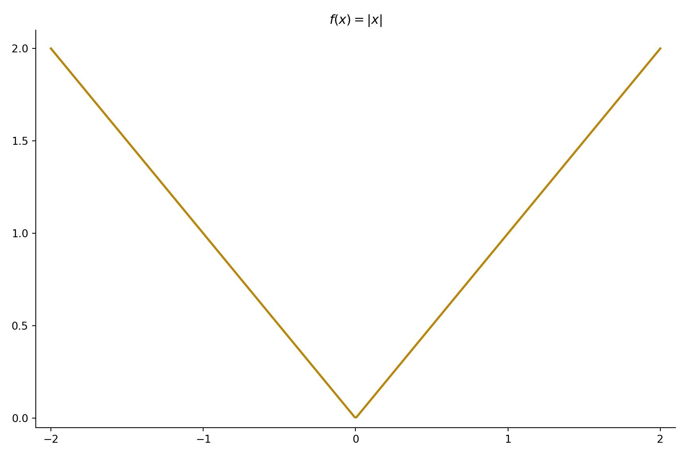
Cálculo I
Reglas de diferenciación
2026-05-11
Reglas de diferenciación
Linealidad de la diferenciación (demostración)
En este presentación, aprenderás
- La demostración de que la diferenciación es una operación lineal.
¿Porqué la diferenciación es lineal?
\(k({\color{teal}x}) = {\color{goldenrod}a}f({\color{teal}x}) + {\color{red}b}g({\color{teal}x})\)
\(\displaystyle k' = \lim_{h \to 0}\frac{k({\color{teal}x}+h) - k({\color{teal}x})}{h}\)
\(\displaystyle \phantom{k'} = \lim_{h \to 0}\frac{({\color{goldenrod}a}f({\color{teal}x}+h) + {\color{red}b}g({\color{teal}x}+h)) - ({\color{goldenrod}a}f({\color{teal}x}) + {\color{red}b}g({\color{teal}x}))}{h}\)
\(\displaystyle \phantom{k'} = \lim_{h \to 0}\frac{{\color{goldenrod}a}f({\color{teal}x}+h) - {\color{goldenrod}a}f({\color{teal}x}) + {\color{red}b}g({\color{teal}x}+h) - {\color{red}b}g({\color{teal}x})}{h}\)
\(\displaystyle \phantom{k'} = \lim_{h \to 0}\frac{{\color{goldenrod}a}[f({\color{teal}x}+h) - f({\color{teal}x})] + {\color{red}b}[g({\color{teal}x}+h) - g({\color{teal}x})]}{h}\)
\(\displaystyle \phantom{k'} = \lim_{h \to 0}{\color{goldenrod}a}\!\left[\frac{f({\color{teal}x}+h) - f({\color{teal}x})}{h}\right] + \lim_{h \to 0}{\color{red}b}\!\left[\frac{g({\color{teal}x}+h) - g({\color{teal}x})}{h}\right]\)
\(\displaystyle \phantom{k'} = {\color{goldenrod}a}f'({\color{teal}x}) + {\color{red}b}g'({\color{teal}x})\)
Teorema: La derivabilidad implica continuidad
En esta presentación, aprenderás:
Que si una función es derivable en un punto, entonces también es continua en ese punto.
La demostración de esa afirmación.
La respuesta a la pregunta de si la continuidad implica derivabilidad.
El Teorema
Si la derivada existe en un punto \(x_0\), entonces la función es continua en \(x_0\).
Recordatorio sobre límites
\[\lim_{{\color{teal}x}\to{\color{red}a}} {\color{teal}x} = {\color{red}a}\]
\[\lim_{{\color{goldenrod}h}\to 0} f({\color{teal}x}+{\color{goldenrod}h}) = f({\color{teal}x})\]
La demostración
\(\displaystyle\lim_{{\color{teal}x}\to{\color{red}a}} f({\color{teal}x}) = f({\color{red}a})\)
\(\displaystyle\lim_{{\color{teal}x}\to{\color{red}a}} [f({\color{teal}x}) - f({\color{red}a})] = 0\)
\(\displaystyle\lim_{{\color{teal}x}\to{\color{red}a}} \left[\frac{f({\color{teal}x})-f({\color{red}a})}{{\color{teal}x}-{\color{red}a}}\cdot({\color{teal}x}-{\color{red}a})\right] = 0\)
\(\displaystyle\lim_{{\color{teal}x}\to{\color{red}a}}\frac{f({\color{teal}x})-f({\color{red}a})}{{\color{teal}x}-{\color{red}a}}\)
\(\displaystyle\cdot\lim_{{\color{teal}x}\to{\color{red}a}}({\color{teal}x}-{\color{red}a})=0\)
\(\displaystyle f'({\color{red}a})\cdot 0 = 0\)
¿Funciona al revés?
Si la función es continua en \(x_0\),
¿existe la derivada en el punto \(x_0\)?
¡No!
Demuestralo!
Un contraejemplo refuta la afirmación.
Un contraejemplo refuta la afirmación.
Regla de la cadena
En este presentación, aprenderás
¡La regla de la cadena! Una de las reglas de derivación más importantes.
La intuición de por qué funciona la regla de la cadena.
funciones compuestas
La regla de la cadena
\([ {\color{goldenrod}f}({\color{red}g}({\color{teal}x})) ]' \;=\; {\color{goldenrod}f}'({\color{red}g}({\color{teal}x}))\,{\color{red}g}'({\color{teal}x})\)
\([ {\color{goldenrod}f}({\color{red}g}({\color{teal}x})) ]' \;=\; {\color{goldenrod}f}'({\color{red}g}({\color{teal}x}))\,{\color{red}g}'({\color{teal}x})\)
\({\color{red}y} = {\color{red}g}({\color{teal}x})\) \({\color{goldenrod}z} = {\color{goldenrod}f}({\color{red}y})\)
\([ {\color{goldenrod}f}({\color{red}g}({\color{teal}x})) ]' \;=\; {\color{goldenrod}f}'({\color{red}g}({\color{teal}x}))\,{\color{red}g}'({\color{teal}x})\)
\({\color{red}y} = {\color{red}g}({\color{teal}x})\) \({\color{goldenrod}z} = {\color{goldenrod}f}({\color{red}y})\)
\(\frac{{\color{goldenrod}dz}}{{\color{teal}dx}} \;=\; \frac{{\color{goldenrod}dz}}{{\color{red}dy}} \cdot \frac{{\color{red}dy}}{{\color{teal}dx}}\)
\([ {\color{goldenrod}f}({\color{red}g}({\color{teal}x})) ]'\)
\(\;=\; {\color{goldenrod}f}'({\color{red}g}({\color{teal}x}))\,{\color{red}g}'({\color{teal}x})\)
\({\color{red}y} = {\color{red}g}({\color{teal}x})\) \({\color{goldenrod}z} = {\color{goldenrod}f}({\color{red}y})\)
\(\frac{{\color{goldenrod}dz}}{{\color{teal}dx}}\)
\(\;=\; \frac{{\color{goldenrod}dz}}{{\color{red}dy}} \cdot \frac{{\color{red}dy}}{{\color{teal}dx}}\)
Ejemplo 1:
\({\color{goldenrod}f}(x) = x^2\)
\({\color{red}g}(x) = x^3 + 3x\)
\({\color{goldenrod}f}({\color{red}g}(x)) = (x^3+3x)^2\)
\({\color{goldenrod}f}({\color{red}g}(x))' =\)
\({\color{goldenrod}f}'({\color{red}g}(x))\)
\({\color{red}g}'(x)\)
\(\phantom{f(g(x))'} =\)
\({\color{goldenrod}2(x^3+3x)}\)
\({\color{red}(3x^2+3)}\)
Ejemplo: 2
\({\color{goldenrod}f}(x) = e^x\)
\({\color{red}g}(x) = 2x^2 + 3\)
\({\color{goldenrod}f}({\color{red}g}(x)) = e^{2x^2+3}\)
\({\color{goldenrod}f}({\color{red}g}(x))' =\)
\({\color{goldenrod}f}'({\color{red}g}(x))\)
\({\color{red}g}'(x)\)
\(\phantom{f(g(x))'} =\)
\({\color{goldenrod}e^{2x^2+3}}\)
\({\color{red}4x}\)
Ejemplo: 3a
\({\color{goldenrod}f}(x) = x^2\)
\({\color{red}g}(x) = \cos(x)\)
\({\color{goldenrod}f}({\color{red}g}(x)) = (\cos(x))^2 = \cos^2(x)\)
\({\color{goldenrod}f}({\color{red}g}(x))' = {\color{goldenrod}f}'({\color{red}g}(x)){\color{red}g}'(x)\)
\(\phantom{f(g(x))'} = {\color{goldenrod}-2\cos(x)}{\color{red}\sin(x)}\)
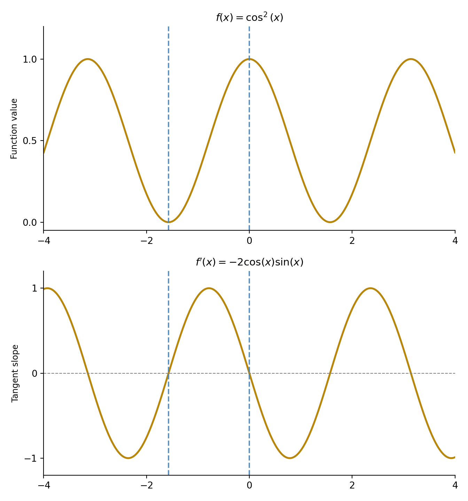
Ejemplo: 3b
\({\color{goldenrod}f}(x) = x^2 + \pi\)
\({\color{red}g}(x) = \cos(x)\)
\({\color{red}g}({\color{goldenrod}f}(x)) = \cos(x^2+\pi)\)
\({\color{red}g}({\color{goldenrod}f}(x))' = {\color{red}g}'({\color{goldenrod}f}(x))\,{\color{goldenrod}f}'(x)\)
\(\phantom{g(f(x))'} = {\color{red}-\sin(x^2+\pi)}\cdot{\color{goldenrod}2x}\)
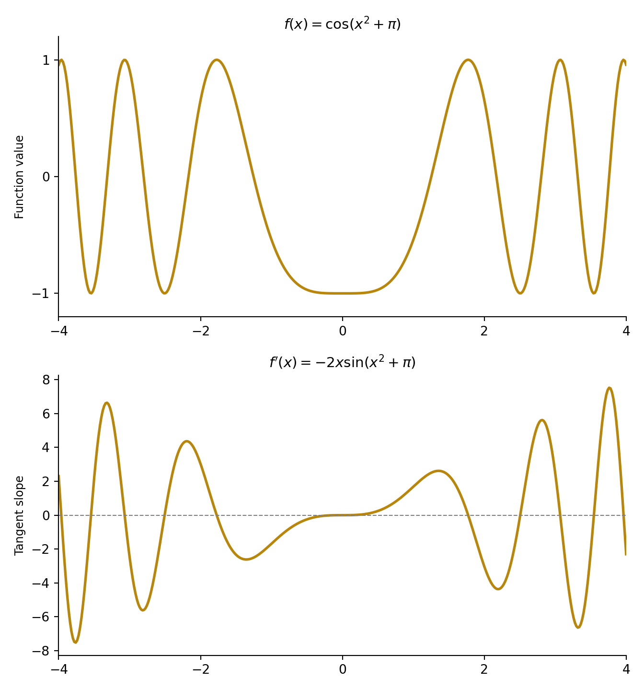
Ejemplo: 4a
\({\color{goldenrod}f}(x) = 4x^2\)
\({\color{red}g}(x) = \ln(x)\)
\({\color{goldenrod}f}({\color{red}g}(x)) = 4(\ln(x))^2\)
\({\color{goldenrod}f}({\color{red}g}(x))' = {\color{goldenrod}f}'({\color{red}g}(x)){\color{red}g}'(x)\)
\(= \frac{{\color{goldenrod}8\ln(x)}}{{\color{red}x}}\)
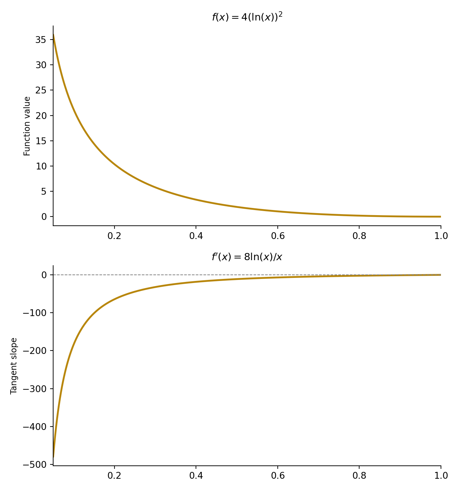
Ejemplo: 4b
\({\color{goldenrod}f}(x) = 4x^2\)
\({\color{red}g}(x) = \ln(x)\)
\({\color{red}g}({\color{goldenrod}f}(x)) = \ln(4x^2)\)
\({\color{goldenrod}f}(x) = 4x^2\)
\({\color{red}g}(x) = \ln(x)\)
\({\color{red}g}({\color{goldenrod}f}(x)) = \ln(4x^2)\)
\({\color{red}g}({\color{goldenrod}f}(x))' = {\color{red}g}'({\color{goldenrod}f}(x))\,{\color{goldenrod}f}'(x)\)
\({\color{goldenrod}f}(x) = 4x^2\)
\({\color{red}g}(x) = \ln(x)\)
\({\color{red}g}({\color{goldenrod}f}(x)) = \ln(4x^2)\)
\({\color{red}g}({\color{goldenrod}f}(x))' = {\color{red}g}'({\color{goldenrod}f}(x))\,{\color{goldenrod}f}'(x)\)
\(= \frac{{\color{red}1}}{{\color{red}4x^2}} \cdot {\color{goldenrod}8x}\)
\(= \frac{{\color{goldenrod}8x}}{{\color{red}4x^2}} = \frac{2}{x}\)
\({\color{goldenrod}f}(x) = 4x^2\)
\({\color{red}g}(x) = \ln(x)\)
\({\color{red}g}({\color{goldenrod}f}(x)) = \ln(4x^2)\)
\({\color{red}g}({\color{goldenrod}f}(x))' = {\color{red}g}'({\color{goldenrod}f}(x))\,{\color{goldenrod}f}'(x)\)
\(= \frac{{\color{red}1}}{{\color{red}4x^2}} \cdot {\color{goldenrod}8x}\)
\(= \frac{{\color{goldenrod}8x}}{{\color{red}4x^2}} = \frac{2}{x}\)
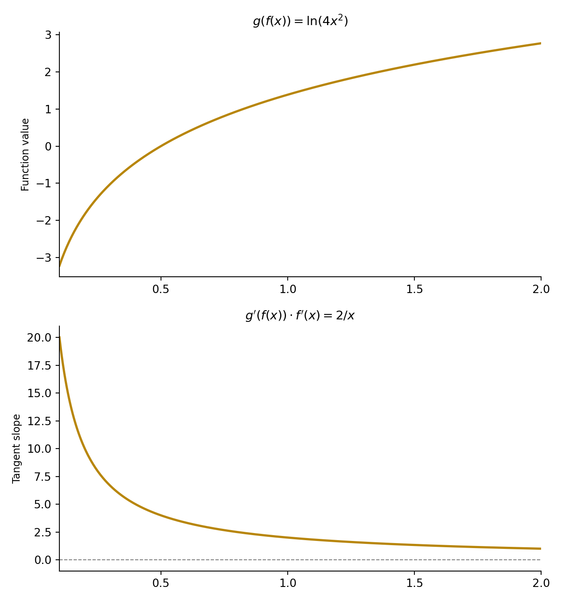
La regla de la cadena
\([ {\color{goldenrod}f}({\color{red}g}({\color{teal}x})) ]' = {\color{goldenrod}f}'({\color{red}g}({\color{teal}x}))\,{\color{red}g}'({\color{teal}x})\)
\({\color{goldenrod}y} = {\color{red}g}({\color{teal}x})\) \({\color{goldenrod}z} = {\color{goldenrod}f}({\color{red}y})\)
\(\frac{{\color{goldenrod}dz}}{{\color{teal}dx}} = \frac{{\color{goldenrod}dz}}{{\color{red}dy}} \cdot \frac{{\color{red}dy}}{{\color{teal}dx}}\)
\(\frac{{\color{goldenrod}dz}}{{\color{teal}dx}} = \frac{{\color{goldenrod}dz}}{{\color{red}dy}} \cdot \frac{{\color{red}dy}}{{\color{teal}dx}}\)
\(\frac{\text{✈}}{\text{🚶}} = \frac{\text{✈}}{\text{🚗}} \cdot \frac{\text{🚗}}{\text{🚶}}\)
Regla del cociente
En esta presentación, aprenderás
- Otra regla extraña que solo tienes que memorizar…
- ¡La regla del cociente, que es súper importante!
- Una aplicación de la regla de la cadena, para demostrar la regla del cociente.
La regla del cociente
\[\left(\frac{{\color{goldenrod}f}}{{\color{maroon}g}}\right)^{\color{teal}'} = \frac{{\color{goldenrod}f}^{\color{teal}'}{\color{maroon}g} - {\color{goldenrod}f}{\color{maroon}g}^{\color{teal}'}}{{\color{maroon}g}^2}\]
“Abajo por d-arriba menos arriba por d-abajo,
¡el de abajo al cuadrado y a dividir!”
Ejemplo-1
\({\color{goldenrod}f}({\color{teal}x}) = {\color{teal}x}^2\)
\({\color{maroon}g}({\color{teal}x}) = \cos({\color{teal}x})\)
\[\left(\frac{{\color{goldenrod}f}}{{\color{maroon}g}}\right)^{\color{teal}'} = \frac{{\color{goldenrod}f}^{\color{teal}'}{\color{maroon}g} - {\color{goldenrod}f}{\color{maroon}g}^{\color{teal}'}}{{\color{maroon}g}^2}\]
\[= \frac{\cos({\color{teal}x}) \cdot 2{\color{teal}x} + {\color{teal}x}^2 \sin({\color{teal}x})}{\cos^2({\color{teal}x})}\]
\[= \frac{{\color{teal}x}(2\cos({\color{teal}x}) + {\color{teal}x}\sin({\color{teal}x}))}{\cos^2({\color{teal}x})}\]
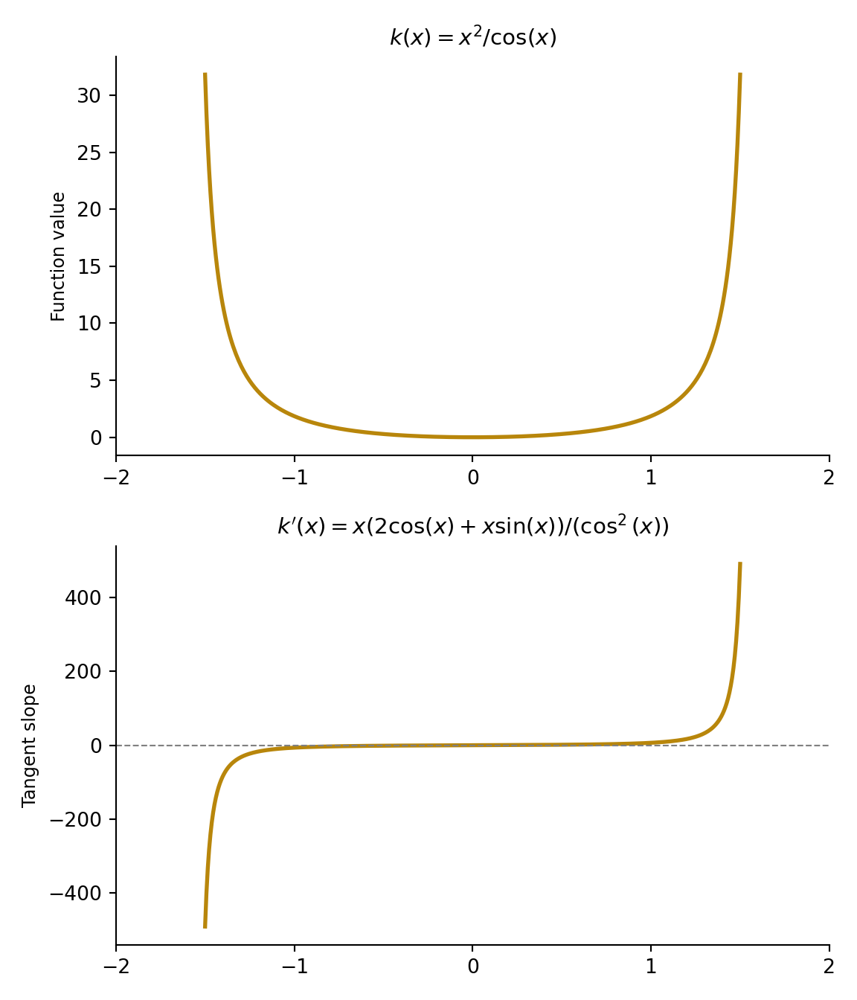
Ejemplo-2
\({\color{goldenrod}f}({\color{teal}x}) = \ln({\color{teal}x})\)
\({\color{maroon}g}({\color{teal}x}) = 4{\color{teal}x}^2\)
\[\left(\frac{{\color{goldenrod}f}}{{\color{maroon}g}}\right)^{\color{teal}'} = \frac{{\color{goldenrod}f}'{\color{maroon}g} - {\color{goldenrod}f}{\color{maroon}g}'}{{\color{maroon}g}^2}\]
\[= \frac{4{\color{teal}x}^2/{\color{teal}x} - \ln({\color{teal}x})8{\color{teal}x}}{16{\color{teal}x}^4}\]
\[= \frac{4{\color{teal}x}({\color{teal}x}/{\color{teal}x} - \ln({\color{teal}x})2)}{16{\color{teal}x}^4}\]
\[= \frac{1 - 2\ln({\color{teal}x})}{4{\color{teal}x}^3}\]
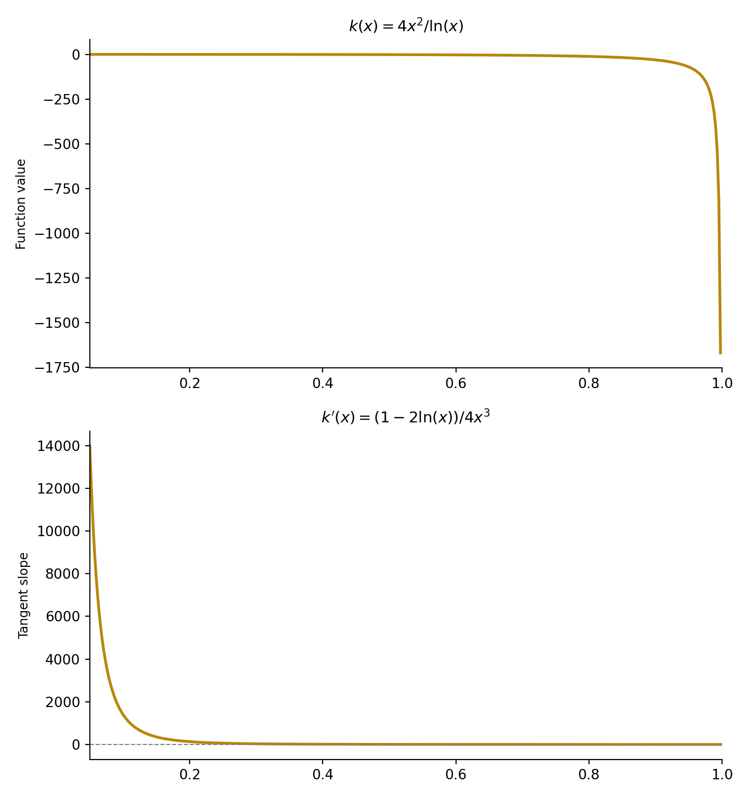
Ejemplo-3
\({\color{goldenrod}f}({\color{teal}x}) = {\color{teal}x}^2\)
\({\color{maroon}g}({\color{teal}x}) = {\color{blue}c}\)
\[\left(\frac{{\color{goldenrod}f}}{{\color{maroon}g}}\right)^{\color{teal}'} = \frac{{\color{goldenrod}f}'{\color{maroon}g} - {\color{goldenrod}f}{\color{maroon}g}'}{{\color{maroon}g}^2}\]
\[= \frac{2{\color{teal}x}{\color{blue}c} - {\color{teal}x}^2 \cdot 0}{{\color{blue}c}^2}\]
\[= \frac{2{\color{teal}x}}{{\color{blue}c}}\]
\[\left(\frac{{\color{goldenrod}f}}{{\color{blue}c}}\right)^{\color{teal}'} = \frac{1}{{\color{blue}c}}{\color{goldenrod}f}'\]
Proof del cociente
\[\frac{{\color{goldenrod}f}}{{\color{maroon}g}} = {\color{goldenrod}f} \cdot \frac{1}{{\color{maroon}g}}\]
\[\left(\frac{{\color{goldenrod}f}}{{\color{maroon}g}}\right)^{\color{teal}'} = \left({\color{goldenrod}f} \cdot \frac{1}{{\color{maroon}g}}\right)^{\color{teal}'}\]
\[= {\color{goldenrod}f} \left(\frac{1}{{\color{maroon}g}}\right)^{\color{teal}'} + {\color{goldenrod}f}^{\color{teal}'} \left(\frac{1}{{\color{maroon}g}}\right)\]
\[\left(\frac{1}{{\color{maroon}g}}\right)^{\color{teal}'} = \left({\color{maroon}g}^{-1}\right)^{\color{teal}'} = -{\color{maroon}g}^{-2}{\color{maroon}g}^{\color{teal}'}\]
\[= \frac{-{\color{goldenrod}f}{\color{maroon}g}^{\color{teal}'}}{{\color{maroon}g}^2} + \frac{{\color{goldenrod}f}^{\color{teal}'}}{{\color{maroon}g}}\]
\[= \frac{{\color{goldenrod}f}^{\color{teal}'}{\color{maroon}g} - {\color{goldenrod}f}{\color{maroon}g}^{\color{teal}'}}{{\color{maroon}g}^2}\]
La regla del cociente
\[\left(\frac{{\color{goldenrod}f}}{{\color{maroon}g}}\right)^{\color{teal}'} = \frac{{\color{goldenrod}f}^{\color{teal}'}{\color{maroon}g} - {\color{goldenrod}f}{\color{maroon}g}^{\color{teal}'}}{{\color{maroon}g}^2}\]
Derivada de la razón vs razón de las derivadas
\[\left(\frac{{\color{teal}f}}{{\color{maroon}g}}\right)^{\color{goldenrod}'} \stackrel{?}{=} \frac{{\color{teal}f}^{\color{goldenrod}'}}{{\color{maroon}g}^{\color{goldenrod}'}}\]
Ejercicio 1P: Confirma la regla del producto Python
\[ \begin{aligned} {\color{teal}f}(x) &= x^2 \\ {\color{maroon}g}(x) &= \cos(x) \\[1em] ({\color{teal}f}{\color{maroon}g})^{\color{goldenrod}'} &= {\color{teal}f}^{\color{goldenrod}'}{\color{maroon}g} + {\color{teal}f}{\color{maroon}g}^{\color{goldenrod}'} \\ &= 2x \cos(x) - x^2 \sin(x) \end{aligned} \]
\((fg)^{\prime}\):
\[-x^2 \sin(x) + 2x \cos(x)\]
\(f^{\prime}g + fg^{\prime}\):
\[-x^2 \sin(x) + 2x \cos(x)\]
Desafíos de programación-1
import numpy as np
import sympy as sym
import matplotlib.pyplot as plt
# better image resolution
import IPython
IPython.matplotlib_inline.backend_inline.set_matplotlib_formats('svg')
# create symbolic variable
x = sym.symbols('x')
# create functions
f = x**2
g = sym.cos(x)
# and their derivatives
df = sym.diff(f)
dg = sym.diff(g)
# their combination
fg = f*g
dfg = sym.diff(fg)
# "manual" product rule
man_dfg = df*g + f*dg
# print them out
from IPython.display import display # for nicer in-line printing
print(f"(fg)':")
display(dfg)
print(f"\nf'g + fg':")
display(man_dfg)Resultado de la ejecución:
\[(fg)':\] \[- x^{2} \sin{\left(x \right)} + 2 x \cos{\left(x \right)}\]
\[f'g + fg':\] \[- x^{2} \sin{\left(x \right)} + 2 x \cos{\left(x \right)}\]
Ejercicio 2P: Confirma la regla del Cociente Python
\[ \begin{aligned} {\color{teal}f}(x) &= x^2 \\ {\color{maroon}g}(x) &= \cos(x) \\[1em] \left(\frac{{\color{teal}f}}{{\color{maroon}g}}\right)^{\color{goldenrod}'} &= \frac{{\color{teal}f}^{\color{goldenrod}'}{\color{maroon}g} - {\color{teal}f}{\color{maroon}g}^{\color{goldenrod}'}}{{\color{maroon}g}^2} \\ &= \frac{x(2\cos(x) + x \sin(x))}{\cos^2(x)} \end{aligned} \]
\((f/g)^{\prime}\):
\[\frac{x^2 \sin(x)}{\cos^2(x)} + \frac{2x}{\cos(x)}\]
\((f'g - fg')/(g^2)^{\prime}\):
\[\frac{x^2 \sin(x) + 2x \cos(x)}{\cos^2(x)}\]
Desafíos de programación-3P
import numpy as np
import sympy as sym
import matplotlib.pyplot as plt
# better image resolution
import IPython
IPython.matplotlib_inline.backend_inline.set_matplotlib_formats('svg')
print(f"(f/g)':\n")
display(dfg)
print(f"\n\n(f'g - fg')/(g**2)':\n")
display(man_dfg)
sym.simplify(man_dfg)Resultado de la ejecución:
\[- \frac{x^{2}}{\left(x + 1\right)^{2}} + \frac{2 x}{x + 1}\]
\[\frac{- x^{2} + 2 x \left(x + 1\right)}{\left(x + 1\right)^{2}}\]
\[\frac{x \left(x + 2\right)}{\left(x + 1\right)^{2}}\]
Desafíos de programación-4P
import numpy as np
import sympy as sym
import matplotlib.pyplot as plt
# better image resolution
import matplotlib_inline.backend_inline
matplotlib_inline.backend_inline.set_matplotlib_formats('svg')
# piecewise function
resolution = .1
xx = np.arange(-1,2,resolution)
# list function definitions
pieces = [0]*3 # initialize list
pieces[0] = np.sin(xx*np.pi)
pieces[1] = 1.5*np.ones(len(xx))
pieces[2] = -(xx-2)**2
# and their x-axis value domains
xdomains = [0]*3 # initialize list
xdomains[0] = xx<0
xdomains[1] = np.abs(xx)<resolution/2
xdomains[2] = xx>0
# and plot
marker = '-o-'
for i in range(len(pieces)):
plt.plot(xx[xdomains[i]],pieces[i][xdomains[i]],marker[i],linewidth=2)
plt.xlabel('x')
plt.ylabel('y=f(x)')
plt.grid()
plt.title('A function with a jump discontinuity')
plt.show()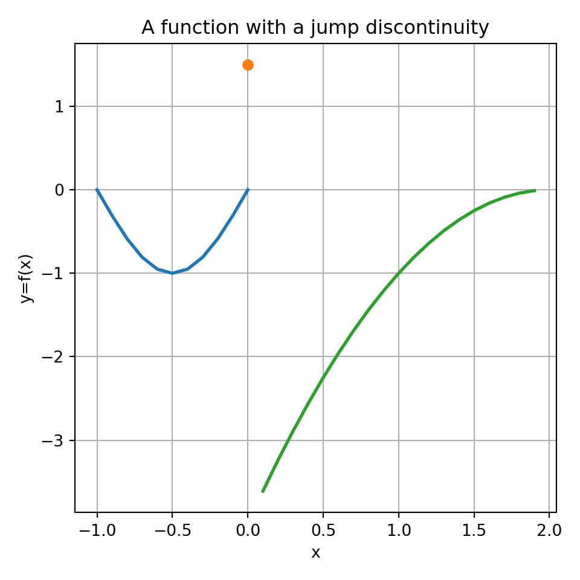
diferenciación implicita
En esta presentación, aprenderás
- La diferencia entre una función “implícita” y una función “explícita”.
- Por qué necesitamos la diferenciación implícita.
- Cómo realizar la diferenciación implícita.
Funciones explicitas vs implicitas
Explicit:
\({\color{goldenrod}y} = 2{\color{teal}x}\)
\({\color{goldenrod}y} = e^{{\color{teal}x}}\ln(\cos({\color{teal}x}))\)
Implicit:
\({\color{teal}x}{\color{goldenrod}y} = 17{\color{teal}x}^{\cos({\color{goldenrod}y})}\)
\(\sqrt{{\color{teal}x}{\color{goldenrod}y}} = \ln(\sin({\color{teal}x}{\color{goldenrod}y})) + 4{\color{goldenrod}y}^4\)
Estrategías de la diferenciación implicita
Differentiate both sides of the equation.
Define the derivative of y as y’.
Solve for y’.
Solve for y and replace (optional and often impossible).
Ejemplo problema: 1
\({\color{teal}x}{\color{goldenrod}y} = 1\)
\({\color{teal}x}{\color{goldenrod}y} = 1\)
\({\color{teal}x} \cdot {\color{goldenrod}y}({\color{teal}x}) = 1\)
\({\color{teal}x}{\color{goldenrod}y} = 1\)
\(({\color{teal}x}{\color{goldenrod}y})' = (1)'\)
\({\color{teal}x}{\color{goldenrod}y} = 1\)
\(({\color{teal}x}{\color{goldenrod}y})' = (1)'\)
\(1{\color{goldenrod}y} + {\color{teal}x}{\color{blue}y'} = 0\)
\({\color{teal}x}{\color{goldenrod}y} = 1\)
\(({\color{teal}x}{\color{goldenrod}y})' = (1)'\)
\(1{\color{goldenrod}y} + {\color{teal}x}{\color{blue}y'} = 0\)
\({\color{blue}y'} = \frac{-{\color{goldenrod}y}}{{\color{teal}x}}\)
Ejemplo problema: 2
\({\color{teal}x}^3{\color{goldenrod}y}^2 = 5{\color{teal}x}^4\)
\({\color{teal}x}^3{\color{goldenrod}y}^2 = 5{\color{teal}x}^4\)
\(({\color{teal}x}^3{\color{goldenrod}y}^2)' = (5{\color{teal}x}^4)'\)
\({\color{teal}x}^3{\color{goldenrod}y}^2 = 5{\color{teal}x}^4\)
\(({\color{teal}x}^3{\color{goldenrod}y}^2)' = (5{\color{teal}x}^4)'\)
\(3{\color{teal}x}^2{\color{goldenrod}y}^2 + 2{\color{teal}x}^3{\color{goldenrod}y}{\color{blue}y'} = 20{\color{teal}x}^3\)
\({\color{teal}x}^3{\color{goldenrod}y}^2 = 5{\color{teal}x}^4\)
\(({\color{teal}x}^3{\color{goldenrod}y}^2)' = (5{\color{teal}x}^4)'\)
\(3{\color{teal}x}^2{\color{goldenrod}y}^2 + 2{\color{teal}x}^3{\color{goldenrod}y}{\color{blue}y'} = 20{\color{teal}x}^3\)
\(2{\color{teal}x}^3{\color{goldenrod}y}{\color{blue}y'} = 20{\color{teal}x}^3 - 3{\color{teal}x}^2{\color{goldenrod}y}^2\)
\({\color{teal}x}^3{\color{goldenrod}y}^2 = 5{\color{teal}x}^4\)
\(({\color{teal}x}^3{\color{goldenrod}y}^2)' = (5{\color{teal}x}^4)'\)
\(3{\color{teal}x}^2{\color{goldenrod}y}^2 + 2{\color{teal}x}^3{\color{goldenrod}y}{\color{blue}y'} = 20{\color{teal}x}^3\)
\(2{\color{teal}x}^3{\color{goldenrod}y}{\color{blue}y'} = 20{\color{teal}x}^3 - 3{\color{teal}x}^2{\color{goldenrod}y}^2\)
\({\color{blue}y'} = \frac{20{\color{teal}x}^3 - 3{\color{teal}x}^2{\color{goldenrod}y}^2}{2{\color{teal}x}^3{\color{goldenrod}y}}\)
\({\color{teal}x}^3{\color{goldenrod}y}^2 = 5{\color{teal}x}^4\)
\(({\color{teal}x}^3{\color{goldenrod}y}^2)' = (5{\color{teal}x}^4)'\)
\(3{\color{teal}x}^2{\color{goldenrod}y}^2 + 2{\color{teal}x}^3{\color{goldenrod}y}{\color{blue}y'} = 20{\color{teal}x}^3\)
\(2{\color{teal}x}^3{\color{goldenrod}y}{\color{blue}y'} = 20{\color{teal}x}^3 - 3{\color{teal}x}^2{\color{goldenrod}y}^2\)
\({\color{blue}y'} = \frac{20{\color{teal}x}^3 - 3{\color{teal}x}^2{\color{goldenrod}y}^2}{2{\color{teal}x}^3{\color{goldenrod}y}}= \frac{{\color{teal}x}^2(20{\color{teal}x} - 3{\color{goldenrod}y}^2)}{{\color{teal}x}^2(2{\color{teal}x}{\color{goldenrod}y})}\)
\({\color{teal}x}^3{\color{goldenrod}y}^2 = 5{\color{teal}x}^4\)
\(({\color{teal}x}^3{\color{goldenrod}y}^2)' = (5{\color{teal}x}^4)'\)
\(3{\color{teal}x}^2{\color{goldenrod}y}^2 + 2{\color{teal}x}^3{\color{goldenrod}y}{\color{blue}y'} = 20{\color{teal}x}^3\)
\(2{\color{teal}x}^3{\color{goldenrod}y}{\color{blue}y'} = 20{\color{teal}x}^3 - 3{\color{teal}x}^2{\color{goldenrod}y}^2\)
\({\color{blue}y'} = \frac{20{\color{teal}x}^3 - 3{\color{teal}x}^2{\color{goldenrod}y}^2}{2{\color{teal}x}^3{\color{goldenrod}y}}\)
\(= \frac{{\color{teal}x}^2(20{\color{teal}x} - 3{\color{goldenrod}y}^2)}{{\color{teal}x}^2(2{\color{teal}x}{\color{goldenrod}y})}\)
\({\color{goldenrod}y} = \sqrt{5{\color{teal}x}}\)
\({\color{blue}y'} = \frac{20{\color{teal}x} - 15{\color{teal}x}}{2{\color{teal}x}\sqrt{5{\color{teal}x}}}\)
\({\color{teal}x}^3{\color{goldenrod}y}^2 = 5{\color{teal}x}^4\)
\(({\color{teal}x}^3{\color{goldenrod}y}^2)' = (5{\color{teal}x}^4)'\)
\(3{\color{teal}x}^2{\color{goldenrod}y}^2 + 2{\color{teal}x}^3{\color{goldenrod}y}{\color{blue}y'} = 20{\color{teal}x}^3\)
\(2{\color{teal}x}^3{\color{goldenrod}y}{\color{blue}y'} = 20{\color{teal}x}^3 - 3{\color{teal}x}^2{\color{goldenrod}y}^2\)
\({\color{blue}y'} = \frac{20{\color{teal}x}^3 - 3{\color{teal}x}^2{\color{goldenrod}y}^2}{2{\color{teal}x}^3{\color{goldenrod}y}}\)
\(= \frac{{\color{teal}x}^2(20{\color{teal}x} - 3{\color{goldenrod}y}^2)}{{\color{teal}x}^2(2{\color{teal}x}{\color{goldenrod}y})}\)
\({\color{goldenrod}y} = \sqrt{5{\color{teal}x}}\)
\({\color{blue}y'} = \frac{20{\color{teal}x} - 15{\color{teal}x}}{2{\color{teal}x}\sqrt{5{\color{teal}x}}}\)
\(= \frac{5}{2\sqrt{5{\color{teal}x}}}\)
\(= \frac{5\sqrt{5{\color{teal}x}}}{10{\color{teal}x}} = \frac{\sqrt{5}}{2}{\color{teal}x}^{-1/2}\)
\({\color{teal}x}^3{\color{goldenrod}y}^2 = 5{\color{teal}x}^4\)
\(({\color{teal}x}^3{\color{goldenrod}y}^2)' = (5{\color{teal}x}^4)'\)
\(3{\color{teal}x}^2{\color{goldenrod}y}^2 + 2{\color{teal}x}^3{\color{goldenrod}y}{\color{blue}y'} = 20{\color{teal}x}^3\)
\(2{\color{teal}x}^3{\color{goldenrod}y}{\color{blue}y'} = 20{\color{teal}x}^3 - 3{\color{teal}x}^2{\color{goldenrod}y}^2\)
\({\color{blue}y'} = \frac{20{\color{teal}x}^3 - 3{\color{teal}x}^2{\color{goldenrod}y}^2}{2{\color{teal}x}^3{\color{goldenrod}y}}\)
\(= \frac{{\color{teal}x}^2(20{\color{teal}x} - 3{\color{goldenrod}y}^2)}{{\color{teal}x}^2(2{\color{teal}x}{\color{goldenrod}y})}\)
\({\color{goldenrod}y} = \sqrt{5{\color{teal}x}}\)
\({\color{blue}y'} = \frac{20{\color{teal}x} - 15{\color{teal}x}}{2{\color{teal}x}\sqrt{5{\color{teal}x}}}\)
\(= \frac{5}{2\sqrt{5{\color{teal}x}}}\)
\(= \frac{5\sqrt{5{\color{teal}x}}}{10{\color{teal}x}}\)
\(= \frac{\sqrt{5}}{2}{\color{teal}x}^{-1/2}\)
Ejemplo problema: 3
Hallar \({\color{blue}y'}\) si \(\cos({\color{teal}x}{\color{goldenrod}y}) = \sin({\color{teal}x})\)
Hallar \({\color{blue}y'}\) si \(\cos({\color{teal}x}{\color{goldenrod}y}) = \sin({\color{teal}x})\)
\[(\cos({\color{teal}x}{\color{goldenrod}y}))' = (\sin({\color{teal}x}))'\]
Hallar \({\color{blue}y'}\) si \(\cos({\color{teal}x}{\color{goldenrod}y}) = \sin({\color{teal}x})\)
\[(\cos({\color{teal}x}{\color{goldenrod}y}))' = (\sin({\color{teal}x}))'\]
\[-\sin({\color{teal}x}{\color{goldenrod}y})\left({\color{goldenrod}y} + {\color{teal}x}{\color{blue}y'}\right) = \cos({\color{teal}x})\]
Hallar \({\color{blue}y'}\) si \(\cos({\color{teal}x}{\color{goldenrod}y}) = \sin({\color{teal}x})\)
\[(\cos({\color{teal}x}{\color{goldenrod}y}))' = (\sin({\color{teal}x}))'\]
\[-\sin({\color{teal}x}{\color{goldenrod}y})\left({\color{goldenrod}y} + {\color{teal}x}{\color{blue}y'}\right) = \cos({\color{teal}x})\]
\[-{\color{goldenrod}y}\sin({\color{teal}x}{\color{goldenrod}y}) - {\color{teal}x}{\color{blue}y'}\sin({\color{teal}x}{\color{goldenrod}y}) = \cos({\color{teal}x})\]
Hallar \({\color{blue}y'}\) si \(\cos({\color{teal}x}{\color{goldenrod}y}) = \sin({\color{teal}x})\)
\[(\cos({\color{teal}x}{\color{goldenrod}y}))' = (\sin({\color{teal}x}))'\]
\[-\sin({\color{teal}x}{\color{goldenrod}y})\left({\color{goldenrod}y} + {\color{teal}x}{\color{blue}y'}\right) = \cos({\color{teal}x})\]
\[-{\color{goldenrod}y}\sin({\color{teal}x}{\color{goldenrod}y}) - {\color{teal}x}{\color{blue}y'}\sin({\color{teal}x}{\color{goldenrod}y}) = \cos({\color{teal}x})\]
\[-{\color{teal}x}{\color{blue}y'}\sin({\color{teal}x}{\color{goldenrod}y}) = \cos({\color{teal}x}) + {\color{goldenrod}y}\sin({\color{teal}x}{\color{goldenrod}y})\]
Hallar \({\color{blue}y'}\) si \(\cos({\color{teal}x}{\color{goldenrod}y}) = \sin({\color{teal}x})\)
\[(\cos({\color{teal}x}{\color{goldenrod}y}))' = (\sin({\color{teal}x}))'\]
\[-\sin({\color{teal}x}{\color{goldenrod}y})\left({\color{goldenrod}y} + {\color{teal}x}{\color{blue}y'}\right) = \cos({\color{teal}x})\]
\[-{\color{goldenrod}y}\sin({\color{teal}x}{\color{goldenrod}y}) - {\color{teal}x}{\color{blue}y'}\sin({\color{teal}x}{\color{goldenrod}y}) = \cos({\color{teal}x})\]
\[-{\color{teal}x}{\color{blue}y'}\sin({\color{teal}x}{\color{goldenrod}y}) = \cos({\color{teal}x}) + {\color{goldenrod}y}\sin({\color{teal}x}{\color{goldenrod}y})\]
\[{\color{blue}y'} = \frac{\cos({\color{teal}x}) + {\color{goldenrod}y}\sin({\color{teal}x}{\color{goldenrod}y})}{-{\color{teal}x}\sin({\color{teal}x}{\color{goldenrod}y})}\]
Ejemplo problema: 4
\[e^{{\color{teal}x^2}+{\color{goldenrod}y^2}} = {\color{teal}x} + {\color{goldenrod}y}\]
\[e^{{\color{teal}x^2}+{\color{goldenrod}y^2}} = {\color{teal}x} + {\color{goldenrod}y}\] \[(e^{{\color{teal}x^2}+{\color{goldenrod}y^2}})' = ({\color{teal}x} + {\color{goldenrod}y})'\]
\[e^{{\color{teal}x^2}+{\color{goldenrod}y^2}} = {\color{teal}x} + {\color{goldenrod}y}\] \[(e^{{\color{teal}x^2}+{\color{goldenrod}y^2}})' = ({\color{teal}x} + {\color{goldenrod}y})'\] \[\exp({\color{teal}x^2} + {\color{goldenrod}y^2})(2{\color{teal}x} + 2{\color{goldenrod}y}{\color{blue}y'}) = 1 + {\color{blue}y'}\]
\[e^{{\color{teal}x^2}+{\color{goldenrod}y^2}} = {\color{teal}x} + {\color{goldenrod}y}\] \[(e^{{\color{teal}x^2}+{\color{goldenrod}y^2}})' = ({\color{teal}x} + {\color{goldenrod}y})'\] \[\exp({\color{teal}x^2} + {\color{goldenrod}y^2})(2{\color{teal}x} + 2{\color{goldenrod}y}{\color{blue}y'}) = 1 + {\color{blue}y'}\] \[2{\color{teal}x}\exp({\color{teal}x^2} + {\color{goldenrod}y^2}) + 2{\color{goldenrod}y}{\color{blue}y'}\exp({\color{teal}x^2} + {\color{goldenrod}y^2}) = 1 + {\color{blue}y'}\]
\[e^{{\color{teal}x^2}+{\color{goldenrod}y^2}} = {\color{teal}x} + {\color{goldenrod}y}\] \[(e^{{\color{teal}x^2}+{\color{goldenrod}y^2}})' = ({\color{teal}x} + {\color{goldenrod}y})'\] \[\exp({\color{teal}x^2} + {\color{goldenrod}y^2})(2{\color{teal}x} + 2{\color{goldenrod}y}{\color{blue}y'}) = 1 + {\color{blue}y'}\] \[2{\color{teal}x}\exp({\color{teal}x^2} + {\color{goldenrod}y^2}) + 2{\color{goldenrod}y}{\color{blue}y'}\exp({\color{teal}x^2} + {\color{goldenrod}y^2}) = 1 + {\color{blue}y'}\] \[2{\color{goldenrod}y}{\color{blue}y'}\exp({\color{teal}x^2} + {\color{goldenrod}y^2}) - {\color{blue}y'} = 1 - 2{\color{teal}x}\exp({\color{teal}x^2} + {\color{goldenrod}y^2})\]
\[e^{{\color{teal}x^2}+{\color{goldenrod}y^2}} = {\color{teal}x} + {\color{goldenrod}y}\] \[(e^{{\color{teal}x^2}+{\color{goldenrod}y^2}})' = ({\color{teal}x} + {\color{goldenrod}y})'\] \[\exp({\color{teal}x^2} + {\color{goldenrod}y^2})(2{\color{teal}x} + 2{\color{goldenrod}y}{\color{blue}y'}) = 1 + {\color{blue}y'}\] \[2{\color{teal}x}\exp({\color{teal}x^2} + {\color{goldenrod}y^2}) + 2{\color{goldenrod}y}{\color{blue}y'}\exp({\color{teal}x^2} + {\color{goldenrod}y^2}) = 1 + {\color{blue}y'}\] \[2{\color{goldenrod}y}{\color{blue}y'}\exp({\color{teal}x^2} + {\color{goldenrod}y^2}) - {\color{blue}y'} = 1 - 2{\color{teal}x}\exp({\color{teal}x^2} + {\color{goldenrod}y^2})\] \[{\color{blue}y'}(2{\color{goldenrod}y}\exp({\color{teal}x^2} + {\color{goldenrod}y^2}) - 1) = 1 - 2{\color{teal}x}\exp({\color{teal}x^2} + {\color{goldenrod}y^2})\]
\[e^{{\color{teal}x^2}+{\color{goldenrod}y^2}} = {\color{teal}x} + {\color{goldenrod}y}\] \[(e^{{\color{teal}x^2}+{\color{goldenrod}y^2}})' = ({\color{teal}x} + {\color{goldenrod}y})'\] \[\exp({\color{teal}x^2} + {\color{goldenrod}y^2})(2{\color{teal}x} + 2{\color{goldenrod}y}{\color{blue}y'}) = 1 + {\color{blue}y'}\] \[2{\color{teal}x}\exp({\color{teal}x^2} + {\color{goldenrod}y^2}) + 2{\color{goldenrod}y}{\color{blue}y'}\exp({\color{teal}x^2} + {\color{goldenrod}y^2}) = 1 + {\color{blue}y'}\] \[2{\color{goldenrod}y}{\color{blue}y'}\exp({\color{teal}x^2} + {\color{goldenrod}y^2}) - {\color{blue}y'} = 1 - 2{\color{teal}x}\exp({\color{teal}x^2} + {\color{goldenrod}y^2})\] \[{\color{blue}y'}(2{\color{goldenrod}y}\exp({\color{teal}x^2} + {\color{goldenrod}y^2}) - 1) = 1 - 2{\color{teal}x}\exp({\color{teal}x^2} + {\color{goldenrod}y^2})\] \[{\color{blue}y'} = \frac{1 - 2{\color{teal}x}\exp({\color{teal}x^2} + {\color{goldenrod}y^2})}{-1 + 2{\color{goldenrod}y}\exp({\color{teal}x^2} + {\color{goldenrod}y^2})}\]
\[{\color{teal}u} = e^{{\color{teal}x^2}+{\color{goldenrod}y^2}}\]
\[\begin{align*} {\color{teal}u} &= {\color{teal}x} + {\color{goldenrod}y} \\ {\color{teal}u}' &= ({\color{teal}x} + {\color{goldenrod}y})' \\ {\color{teal}u}(2{\color{teal}x} + 2{\color{goldenrod}y}{\color{blue}y'}) &= 1 + {\color{blue}y'} \\ 2{\color{teal}x}{\color{teal}u} + 2{\color{goldenrod}y}{\color{blue}y'}{\color{teal}u} &= 1 + {\color{blue}y'} \\ 2{\color{goldenrod}y}{\color{blue}y'}{\color{teal}u} - {\color{blue}y'} &= 1 - 2{\color{teal}x}{\color{teal}u} \\ {\color{blue}y'}(2{\color{goldenrod}y}{\color{teal}u} - 1) &= 1 - 2{\color{teal}x}{\color{teal}u} \\ {\color{blue}y'} &= \frac{1 - 2{\color{teal}x}{\color{teal}u}}{-1 + 2{\color{goldenrod}y}{\color{teal}u}} \end{align*}\]
Ejemplo problema: 5
\[\cos({\color{teal}x^2}) = e^{\color{goldenrod}y}\]
\[\cos({\color{teal}x^2}) = e^{\color{goldenrod}y}\] \[(\cos({\color{teal}x^2}))' = (e^{\color{goldenrod}y})'\]
\[\cos({\color{teal}x^2}) = e^{\color{goldenrod}y}\] \[(\cos({\color{teal}x^2}))' = (e^{\color{goldenrod}y})'\] \[-2{\color{teal}x}\sin({\color{teal}x^2}) = e^{\color{goldenrod}y}{\color{blue}y'}\]
\[\cos({\color{teal}x^2}) = e^{\color{goldenrod}y}\] \[(\cos({\color{teal}x^2}))' = (e^{\color{goldenrod}y})'\] \[-2{\color{teal}x}\sin({\color{teal}x^2}) = e^{\color{goldenrod}y}{\color{blue}y'}\] \[{\color{blue}y'} = \frac{-2{\color{teal}x}\sin({\color{teal}x^2})}{e^{\color{goldenrod}y}}\]
\[\cos({\color{teal}x^2}) = e^{\color{goldenrod}y}\] \[(\cos({\color{teal}x^2}))' = (e^{\color{goldenrod}y})'\] \[-2{\color{teal}x}\sin({\color{teal}x^2}) = e^{\color{goldenrod}y}{\color{blue}y'}\] \[\begin{align*} {\color{blue}y'} &= \frac{-2{\color{teal}x}\sin({\color{teal}x^2})}{e^{\color{goldenrod}y}} \\[0.4em] &= \frac{-2{\color{teal}x}\sin({\color{teal}x^2})}{\cos({\color{teal}x^2})} \end{align*}\]
\[\cos({\color{teal}x^2}) = e^{\color{goldenrod}y}\] \[(\cos({\color{teal}x^2}))' = (e^{\color{goldenrod}y})'\] \[-2{\color{teal}x}\sin({\color{teal}x^2}) = e^{\color{goldenrod}y}{\color{blue}y'}\] \[\begin{align*} {\color{blue}y'} &= \frac{-2{\color{teal}x}\sin({\color{teal}x^2})}{e^{\color{goldenrod}y}} \\[0.4em] &= \frac{-2{\color{teal}x}\sin({\color{teal}x^2})}{\cos({\color{teal}x^2})} \end{align*}\]
\[\ln(\cos({\color{teal}x^2})) = \ln(e^{\color{goldenrod}y})\]
\[\cos({\color{teal}x^2}) = e^{\color{goldenrod}y}\] \[(\cos({\color{teal}x^2}))' = (e^{\color{goldenrod}y})'\] \[-2{\color{teal}x}\sin({\color{teal}x^2}) = e^{\color{goldenrod}y}{\color{blue}y'}\] \[\begin{align*} {\color{blue}y'} &= \frac{-2{\color{teal}x}\sin({\color{teal}x^2})}{e^{\color{goldenrod}y}} \\[0.4em] &= \frac{-2{\color{teal}x}\sin({\color{teal}x^2})}{\cos({\color{teal}x^2})} \end{align*}\]
\[\ln(\cos({\color{teal}x^2})) = \ln(e^{\color{goldenrod}y})\] \[\ln(\cos({\color{teal}x^2})) = {\color{goldenrod}y}\]
\[\cos({\color{teal}x^2}) = e^{\color{goldenrod}y}\] \[(\cos({\color{teal}x^2}))' = (e^{\color{goldenrod}y})'\] \[-2{\color{teal}x}\sin({\color{teal}x^2}) = e^{\color{goldenrod}y}{\color{blue}y'}\] \[\begin{align*} {\color{blue}y'} &= \frac{-2{\color{teal}x}\sin({\color{teal}x^2})}{e^{\color{goldenrod}y}} \\[0.4em] &= \frac{-2{\color{teal}x}\sin({\color{teal}x^2})}{\cos({\color{teal}x^2})} \end{align*}\]
\[\ln(\cos({\color{teal}x^2})) = \ln(e^{\color{goldenrod}y})\] \[\ln(\cos({\color{teal}x^2})) = {\color{goldenrod}y}\] \[{\color{blue}y'} = \frac{-2{\color{teal}x}\sin({\color{teal}x^2})}{\cos({\color{teal}x^2})}\]
Prueba de diferenciación Implicita
En esta presentación, aprenderás
● Recordatorios de algunas reglas de cálculo
● Demostraciones de esas reglas usando diferenciación implícita.
● ¡Más sobre la total genialidad de la diferenciación implícita!
La derivada del log natural
\[f({\color{teal}x}) = \ln({\color{teal}x})\]
\[f' = \frac{1}{{\color{teal}x}}\]
Probando la regla de log con diferenciación implicita
\[{\color{goldenrod}y} = \ln({\color{teal}x})\]
\[{\color{goldenrod}y} = \ln({\color{teal}x})\] \[e^{\color{goldenrod}y} = e^{\ln({\color{teal}x})}\]
\[{\color{goldenrod}y} = \ln({\color{teal}x})\] \[e^{\color{goldenrod}y} = e^{\ln({\color{teal}x})}\] \[e^{\color{goldenrod}y} = {\color{teal}x}\]
\[(e^{\color{goldenrod}y})' = ({\color{teal}x})'\]
\[{\color{goldenrod}y} = \ln({\color{teal}x})\] \[e^{\color{goldenrod}y} = e^{\ln({\color{teal}x})}\] \[e^{\color{goldenrod}y} = {\color{teal}x}\]
\[(e^{\color{goldenrod}y})' = ({\color{teal}x})'\] \[e^{\color{goldenrod}y}{\color{blue}y'} = 1\] \[{\color{blue}y'} = \frac{1}{e^{\color{goldenrod}y}}\]
\[{\color{goldenrod}y} = \ln({\color{teal}x})\] \[e^{\color{goldenrod}y} = e^{\ln({\color{teal}x})}\] \[e^{\color{goldenrod}y} = {\color{teal}x}\]
\[(e^{\color{goldenrod}y})' = ({\color{teal}x})'\] \[e^{\color{goldenrod}y}{\color{blue}y'} = 1\] \[{\color{blue}y'} = \frac{1}{e^{\color{goldenrod}y}}\] \[{\color{blue}y'} = \frac{1}{e^{\ln({\color{teal}x})}}\]
\[{\color{goldenrod}y} = \ln({\color{teal}x})\] \[e^{\color{goldenrod}y} = e^{\ln({\color{teal}x})}\] \[e^{\color{goldenrod}y} = {\color{teal}x}\]
\[(e^{\color{goldenrod}y})' = ({\color{teal}x})'\] \[e^{\color{goldenrod}y}{\color{blue}y'} = 1\] \[{\color{blue}y'} = \frac{1}{e^{\color{goldenrod}y}}\] \[{\color{blue}y'} = \frac{1}{e^{\ln({\color{teal}x})}}\] \[{\color{blue}y'} = \frac{1}{{\color{teal}x}}\]
La derivada de la exponencial natural \(e^x\)
\[f({\color{teal}x}) = e^{\color{teal}x}\]
\[f' = e^{\color{teal}x}\]
Probando la regla exponencial con diferenciacion implicita
\[{\color{goldenrod}y} = e^{\color{teal}x}\]
\[{\color{goldenrod}y} = e^{\color{teal}x}\] \[\ln({\color{goldenrod}y}) = \ln(e^{\color{teal}x})\]
\[{\color{goldenrod}y} = e^{\color{teal}x}\] \[\ln({\color{goldenrod}y}) = \ln(e^{\color{teal}x})\] \[\ln({\color{goldenrod}y}) = {\color{teal}x}\] \[(\ln({\color{goldenrod}y}))' = ({\color{teal}x})'\]
\[{\color{goldenrod}y} = e^{\color{teal}x}\] \[\ln({\color{goldenrod}y}) = \ln(e^{\color{teal}x})\] \[\ln({\color{goldenrod}y}) = {\color{teal}x}\] \[(\ln({\color{goldenrod}y}))' = ({\color{teal}x})'\] \[\frac{{\color{blue}y'}}{{\color{goldenrod}y}} = 1\] \[\begin{align*} {\color{blue}y'} &= {\color{goldenrod}y} \end{align*}\]
\[{\color{goldenrod}y} = e^{\color{teal}x}\] \[\ln({\color{goldenrod}y}) = \ln(e^{\color{teal}x})\] \[\ln({\color{goldenrod}y}) = {\color{teal}x}\] \[(\ln({\color{goldenrod}y}))' = ({\color{teal}x})'\] \[\frac{{\color{blue}y'}}{{\color{goldenrod}y}} = 1\] \[\begin{align*} {\color{blue}y'} &= {\color{goldenrod}y} \\[0.3em] &= e^{\color{teal}x} \end{align*}\]
Probando la regla de la potencia
\[f({\color{teal}x}) = {\color{goldenrod}c}{\color{teal}x}^{\color{red}r}\]
\[f'({\color{teal}x}) = {\color{red}r}{\color{goldenrod}c}{\color{teal}x}^{{\color{red}r}-1}\]
Probando la regla de potencia con diferenciación implicita
\[{\color{goldenrod}y} = {\color{teal}x}^{\color{red}n}\] \[\ln({\color{goldenrod}y}) = \ln({\color{teal}x}^{\color{red}n})\]
\[{\color{goldenrod}y} = {\color{teal}x}^{\color{red}n}\] \[\ln({\color{goldenrod}y}) = \ln({\color{teal}x}^{\color{red}n})\] \[\ln({\color{goldenrod}y}) = {\color{red}n}\ln({\color{teal}x})\]
\[{\color{goldenrod}y} = {\color{teal}x}^{\color{red}n}\] \[\ln({\color{goldenrod}y}) = \ln({\color{teal}x}^{\color{red}n})\] \[\ln({\color{goldenrod}y}) = {\color{red}n}\ln({\color{teal}x})\] \[\begin{align*} \frac{1}{{\color{goldenrod}y}}{\color{blue}y'} &= {\color{red}n}\frac{1}{{\color{teal}x}} \\[0.5em] {\color{blue}y'} &= {\color{red}n}\frac{{\color{goldenrod}y}}{{\color{teal}x}} \\[0.5em] &= {\color{red}n}\frac{{\color{teal}x}^{\color{red}n}}{{\color{teal}x}} = {\color{red}n}{\color{teal}x}^{{\color{red}n}-1} \end{align*}\]
DesafíosCode Diferenciación implicita
En este video, aprenderás
● Cómo implementar la diferenciación implícita en sympy.
● Cómo visualizar funciones implícitas en sympy.
● ¡Más sobre lo complicada que puede ser la diferenciación implícita!
● Más sobre trabajar con números simbólicos vs. de precisión finita.
Ejercicio 1: Diferenciación implicita en sympy
● Usa sym.idiff para calcular y’ de xy=1.
● Usa sym.plot_implicit para graficar la función y su derivada.
● Usa sym.solve para transformar la función a su forma explícita.
● Sustituye la forma explícita en la forma implícita para obtener y’ sin y.
● Grafica esa derivada.
Derivadas de Orden Superior
En esta presentación, aprenderás
● Notaciones para derivadas de orden superior.
● Cómo calcular derivadas de orden superior.
● Aplicaciones de las derivadas de orden superior.
¿Qué es una derivada de Orden superior?
● “Primera derivada” es la derivada de la función.
● “Segunda derivada” es la derivada de la derivada.
● “Tercera derivada” es la derivada de la derivada de la derivada.
● “Derivada de orden N” es tomar la derivada N veces.
Notación diferente de la diferenciación
1a Derivada
2a Derivada
3a Derivada
Leibniz
\(\frac{d{\color{goldenrod}y}}{d{\color{teal}x}}\)
\(\frac{d^2{\color{goldenrod}y}}{d{\color{teal}x}^2}\)
\(\frac{d^3{\color{goldenrod}y}}{(d{\color{teal}x})^3}\)
Lagrange
\({\color{goldenrod}f'}\)
\({\color{goldenrod}f''}\)
\({\color{goldenrod}f}^{(3)}\)
Newton
\(\dot{{\color{goldenrod}y}}\)
\(\ddot{{\color{goldenrod}y}}\)
\(\overset{3}{\dot{{\color{goldenrod}y}}}\)
Euler
\({\color{goldenrod}D}{\color{goldenrod}f}\)
\({\color{goldenrod}D}^2{\color{goldenrod}f}\)
\({\color{goldenrod}D}^3{\color{goldenrod}f}\)
Cálculo de las derivadas de orden superior
\[\begin{align*} {\color{goldenrod}f}({\color{teal}x}) &= 3{\color{teal}x}^4 + e^{-{\color{teal}x}^2} + \cos({\color{teal}x}) \\[0.5em] {\color{blue}f'}({\color{teal}x}) &= \\[0.5em] {\color{blue}f''}({\color{teal}x}) &= \end{align*}\]
\[\begin{align*} {\color{goldenrod}f}({\color{teal}x}) &= 3{\color{teal}x}^4 + e^{-{\color{teal}x}^2} + \cos({\color{teal}x}) \\[0.5em] {\color{blue}f'}({\color{teal}x}) &= 12{\color{teal}x}^3 - 2{\color{teal}x}e^{-{\color{teal}x}^2} - \sin({\color{teal}x}) \\[0.5em] {\color{blue}f''}({\color{teal}x}) &= \end{align*}\]
\[\begin{align*} {\color{goldenrod}f}({\color{teal}x}) &= 3{\color{teal}x}^4 + e^{-{\color{teal}x}^2} + \cos({\color{teal}x}) \\[0.5em] {\color{blue}f'}({\color{teal}x}) &= 12{\color{teal}x}^3 - 2{\color{teal}x}e^{-{\color{teal}x}^2} - \sin({\color{teal}x}) \\[0.5em] {\color{blue}f''}({\color{teal}x}) &= 36{\color{teal}x}^2 + \left(-2e^{-{\color{teal}x}^2} - 2{\color{teal}x}(-2{\color{teal}x}e^{-{\color{teal}x}^2})\right) - \cos({\color{teal}x}) \end{align*}\]
\[\begin{align*} {\color{goldenrod}f}({\color{teal}x}) &= 3{\color{teal}x}^4 + e^{-{\color{teal}x}^2} + \cos({\color{teal}x}) \\[0.5em] {\color{blue}f'}({\color{teal}x}) &= 12{\color{teal}x}^3 - 2{\color{teal}x}e^{-{\color{teal}x}^2} - \sin({\color{teal}x}) \\[0.5em] {\color{blue}f''}({\color{teal}x}) &= 36{\color{teal}x}^2 + \left(-2e^{-{\color{teal}x}^2} - 2{\color{teal}x}(-2{\color{teal}x}e^{-{\color{teal}x}^2})\right) - \cos({\color{teal}x}) \\ &= 36{\color{teal}x}^2 + 2e^{-{\color{teal}x}^2}\left(2{\color{teal}x}^2 - 1\right) - \cos({\color{teal}x}) \end{align*}\]
Complejidades de las derivadas de orden superior
● Los polinomios tienden a simplificarse en la diferenciación de orden superior.
● Las funciones trascendentales tienden a complicarse más con cada diferenciación.
Aplicaciones de la derivada de orden superior
Exámenes de cálculo…
Trazado de curvas (puntos de inflexión)
Clasificación de puntos críticos
Física (posición, velocidad, aceleración)
Regla de L’Hôpital para límites indeterminados
En este video, aprenderás
● Qué es la regla de L’Hôpital.
● Cuándo y cómo aplicar la regla.
Posibles grafías:
L’Hôpital’s rule
L’Hopital’s rule
L’Hospital’s rule
Bernoulli’s rule
Posibiliades de Límites
Etiqueta
Caso
Resultado
Ejemplo
«Fácil»
\(\displaystyle\lim_{x\to a}{\color{goldenrod}f}(x) = {\color{goldenrod}c}\)
\(c\)
\(\displaystyle\lim_{x\to 2}\dfrac{x+3}{x-1} = \dfrac{5}{1}\)
No cero
sobre cero
\(\displaystyle\lim_{x\to a}{\color{goldenrod}f}(x) = \dfrac{{\color{goldenrod}c}}{0}\)
-∞, ∞,
indefinido
\(\displaystyle\lim_{x\to 2^+}\dfrac{x+2}{x-2} = \infty\)
Indeterminado
\(\displaystyle\lim_{x\to a}{\color{goldenrod}f}(x) = \dfrac{0}{0}\)
Álgebra o regla
de L’Hôpital
\(\displaystyle\lim_{x\to 0}\dfrac{\sin(x)}{x} = 1\)
Etiqueta
Caso
Resultado
Ejemplo
Infinito
sobre finito
\(\displaystyle\lim_{x\to\infty}{\color{goldenrod}f}(x) = \dfrac{\infty}{{\color{goldenrod}c}}\)
-∞, ∞,
indefinido
\(\displaystyle\lim_{x\to\infty}\dfrac{\sqrt{x}}{2} = \infty\)
Finito
sobre infinito
\(\displaystyle\lim_{x\to\infty}{\color{goldenrod}f}(x) = \dfrac{{\color{goldenrod}c}}{\infty}\)
0
\(\displaystyle\lim_{x\to\infty}\dfrac{\cos(x)}{x} = 0\)
Infinito
sobre infinito
\(\displaystyle\lim_{x\to\infty}{\color{goldenrod}f}(x) = \dfrac{\infty}{\infty}\)
Álgebra o regla
de L’Hôpital
\(\displaystyle\lim_{x\to\infty}\dfrac{e^x}{x^3} = 0\)
Finito
sobre finito
\(\displaystyle\lim_{x\to\infty}{\color{goldenrod}f}(x) = \dfrac{{\color{goldenrod}c}}{{\color{goldenrod}d}}\)
Carrera equilibrada
al infinito
\(\displaystyle\lim_{x\to\infty}\dfrac{x^2}{2x^2} = \dfrac{1}{2}\)
La regla de Hôspital para curar funciones enfermas
Regla de L’Hôpital:
Si el límite de una razón de dos funciones es indeterminado,
intenta el límite de la razón de las derivadas.
Regla de L’Hôpital:
Si el límite de una razón de dos funciones es indeterminado,
intenta el límite de la razón de las derivadas.
\[\text{si} \quad \lim_{{\color{teal}x}\to c}\dfrac{{\color{goldenrod}f}({\color{teal}x})}{{\color{blue}g}({\color{teal}x})} = \dfrac{0}{0} \quad \text{o} \quad \dfrac{\pm\infty}{\pm\infty}\] \[\text{entonces} \quad \lim_{{\color{teal}x}\to c}\dfrac{{\color{goldenrod}f}({\color{teal}x})}{{\color{blue}g}({\color{teal}x})} = \lim_{{\color{teal}x}\to c}\dfrac{{\color{goldenrod}f'}({\color{teal}x})}{{\color{blue}g'}({\color{teal}x})}\]
Regla de L’Hôpital:
Si el límite de una razón de dos funciones es indeterminado,
intenta el límite de la razón de las derivadas.
\[\text{si} \quad \lim_{{\color{teal}x}\to c}\dfrac{{\color{goldenrod}f}({\color{teal}x})}{{\color{blue}g}({\color{teal}x})} = \dfrac{0}{0} \quad \text{o} \quad \dfrac{\pm\infty}{\pm\infty}\]
\[\text{entonces} \quad \lim_{{\color{teal}x}\to c}\dfrac{{\color{goldenrod}f}({\color{teal}x})}{{\color{blue}g}({\color{teal}x})} = \lim_{{\color{teal}x}\to c}\dfrac{{\color{goldenrod}f'}({\color{teal}x})}{{\color{blue}g'}({\color{teal}x})}\]
Regla de L’Hôpital:
Si el límite de una razón de dos funciones es indeterminado,
intenta el límite de la razón de las derivadas.
\[\text{si} \quad \lim_{{\color{teal}x}\to c}\dfrac{{\color{goldenrod}f}({\color{teal}x})}{{\color{blue}g}({\color{teal}x})} = \dfrac{0}{0} \quad \text{o} \quad \dfrac{\pm\infty}{\pm\infty}\]
\[\text{entonces} \quad \lim_{{\color{teal}x}\to c}\dfrac{{\color{goldenrod}f}({\color{teal}x})}{{\color{blue}g}({\color{teal}x})} = \lim_{{\color{teal}x}\to c}\dfrac{{\color{goldenrod}f'}({\color{teal}x})}{{\color{blue}g'}({\color{teal}x})}\]
¡La regla de Hôpital no es la regla del cociente!
\[\dfrac{{\color{goldenrod}f'}({\color{teal}x})}{{\color{blue}g'}({\color{teal}x})} \;\neq\; \left(\dfrac{{\color{goldenrod}f}({\color{teal}x})}{{\color{blue}g}({\color{teal}x})}\right)'\]
Ejemplo 1:
\[\lim_{\phi\to 0}\left[\frac{\cos(\phi)-1}{\phi}\right] = 0\]
\[\lim_{\phi\to 0}\left[\frac{\sin(\phi)}{\phi}\right] = 1\]
En el círculo unitario (\(r = 1\)), cuando \(\phi \to 0\),
el arco \(\phi\) y el segmento \(\sin(\phi)\) son casi iguales:
\[\frac{{\color{goldenrod}\sin(\phi)}}{{\color{teal}\phi}} \approx 1 \qquad \therefore \qquad \lim_{\phi\to 0}\left[\frac{\sin(\phi)}{\phi}\right] = 1\]
Ejemplo 1:


Ejemplo 1:
\(\displaystyle\lim_{{\color{teal}\theta}\to 0}\frac{\cos({\color{teal}\theta})-1}{{\color{teal}\theta}} = \frac{0}{0}\)
\(\displaystyle\lim_{{\color{teal}\theta}\to 0}\frac{\cos({\color{teal}\theta})-1}{{\color{teal}\theta}} = \frac{0}{0}\)
\(\displaystyle\lim_{{\color{teal}\theta}\to 0}\frac{-\sin({\color{teal}\theta})}{1}\)
\(\displaystyle\lim_{{\color{teal}\theta}\to 0}\frac{\cos({\color{teal}\theta})-1}{{\color{teal}\theta}} = \frac{0}{0}\)
\(\displaystyle\lim_{{\color{teal}\theta}\to 0}\frac{-\sin({\color{teal}\theta})}{1} = \frac{0}{1} = 0\)
\(\displaystyle\lim_{{\color{teal}\theta}\to 0}\frac{\sin({\color{teal}\theta})}{{\color{teal}\theta}} = \frac{0}{0}\)
\(\displaystyle\lim_{{\color{teal}\theta}\to 0}\frac{\cos({\color{teal}\theta})-1}{{\color{teal}\theta}} = \frac{0}{0}\)
\(\displaystyle\lim_{{\color{teal}\theta}\to 0}\frac{-\sin({\color{teal}\theta})}{1} = \frac{0}{1} = 0\)
\(\displaystyle\lim_{{\color{teal}\theta}\to 0}\frac{\sin({\color{teal}\theta})}{{\color{teal}\theta}} = \frac{0}{0}\)
\(\displaystyle\lim_{{\color{teal}\theta}\to 0}\frac{\cos({\color{teal}\theta})}{1}\)
Ejemplo 2:
\[\lim_{{\color{teal}x}\to\infty}\frac{2{\color{teal}x}^2+4{\color{teal}x}-7}{7{\color{teal}x}^2-13{\color{teal}x}+2} = \frac{\infty}{\infty}\]
\[\lim_{{\color{teal}x}\to\infty}\frac{2{\color{teal}x}^2+4{\color{teal}x}-7}{7{\color{teal}x}^2-13{\color{teal}x}+2} = \frac{\infty}{\infty}\]
\[\lim_{{\color{teal}x}\to\infty}\frac{4{\color{teal}x}+4}{14{\color{teal}x}-13} = \frac{\infty}{\infty}\]
\[\lim_{{\color{teal}x}\to\infty}\frac{2{\color{teal}x}^2+4{\color{teal}x}-7}{7{\color{teal}x}^2-13{\color{teal}x}+2} = \frac{\infty}{\infty}\]
\[\lim_{{\color{teal}x}\to\infty}\frac{4{\color{teal}x}+4}{14{\color{teal}x}-13} = \frac{\infty}{\infty}\]
\[\lim_{{\color{teal}x}\to\infty}\frac{4}{14} = \frac{4}{14} = \frac{2}{7}\]
Ejercicio 3
\[\lim_{{\color{teal}x} \to 0^+} {\color{teal}x}^2 \ln {\color{teal}x} = 0 \cdot (-\infty)\]
\[\lim_{{\color{teal}x} \to 0^+} {\color{teal}x}^2 \ln {\color{teal}x} = 0 \cdot (-\infty)\]
\[\lim_{{\color{teal}x} \to 0^+} \frac{\ln {\color{teal}x}}{{\color{teal}x}^{-2}}\]
\[\lim_{{\color{teal}x} \to 0^+} {\color{teal}x}^2 \ln {\color{teal}x} = 0 \cdot (-\infty)\]
\[\lim_{{\color{teal}x} \to 0^+} \frac{\ln {\color{teal}x}}{{\color{teal}x}^{-2}} = \frac{-\infty}{\infty}\]
\[\lim_{{\color{teal}x} \to 0^+} \frac{{\color{teal}x}^{-1}}{-2{\color{teal}x}^{-3}}\]
\[\lim_{{\color{teal}x} \to 0^+} {\color{teal}x}^2 \ln {\color{teal}x} = 0 \cdot (-\infty)\]
\[\lim_{{\color{teal}x} \to 0^+} \frac{\ln {\color{teal}x}}{{\color{teal}x}^{-2}} = \frac{-\infty}{\infty}\]
\[\lim_{{\color{teal}x} \to 0^+} \frac{{\color{teal}x}^{-1}}{-2{\color{teal}x}^{-3}} = -\frac{1}{2}{\color{teal}x}^{3} \cdot {\color{teal}x}^{-1} = -\frac{1}{2}{\color{teal}x}^{2} = 0\]
\({\color{goldenrod}f}({\color{teal}x}) = {\color{teal}x}^2 \ln {\color{teal}x}\)
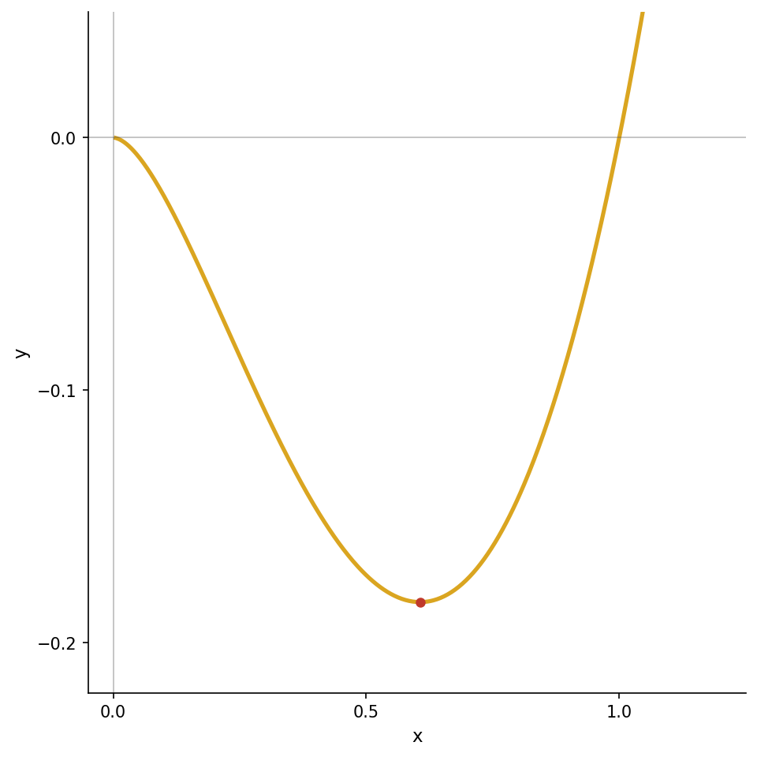
\[\begin{align*} {\color{blue}f}'({\color{teal}x}) &= 2{\color{teal}x} \ln {\color{teal}x} + {\color{teal}x}^2 \cdot \frac{1}{{\color{teal}x}} \end{align*}\]
\({\color{goldenrod}f}({\color{teal}x}) = {\color{teal}x}^2 \ln {\color{teal}x}\)
\[\begin{align*} {\color{blue}f}'({\color{teal}x}) &= 2{\color{teal}x} \ln {\color{teal}x} + {\color{teal}x}^2 \cdot \frac{1}{{\color{teal}x}} \\ &= 2{\color{teal}x} \ln {\color{teal}x} + {\color{teal}x} \\ &= {\color{teal}x}(2\ln {\color{teal}x} + 1) \end{align*}\]
\({\color{goldenrod}f}({\color{teal}x}) = {\color{teal}x}^2 \ln {\color{teal}x}\)
\[\begin{align*} {\color{blue}f}'({\color{teal}x}) &= 2{\color{teal}x} \ln {\color{teal}x} + {\color{teal}x}^2 \cdot \frac{1}{{\color{teal}x}} \\ &= 2{\color{teal}x} \ln {\color{teal}x} + {\color{teal}x} \\ &= {\color{teal}x}(2\ln {\color{teal}x} + 1) \\ 0 &= {\color{teal}x}(2\ln {\color{teal}x} + 1) \\ 0 &= \ln({\color{teal}x}^2) + 1 \\ -1 &= \ln({\color{teal}x}^2) \end{align*}\]
\({\color{goldenrod}f}({\color{teal}x}) = {\color{teal}x}^2 \ln {\color{teal}x}\)
\[\begin{align*} {\color{blue}f}'({\color{teal}x}) &= 2{\color{teal}x} \ln {\color{teal}x} + {\color{teal}x}^2 \cdot \frac{1}{{\color{teal}x}} \\ &= 2{\color{teal}x} \ln {\color{teal}x} + {\color{teal}x} \\ &= {\color{teal}x}(2\ln {\color{teal}x} + 1) \\ 0 &= {\color{teal}x}(2\ln {\color{teal}x} + 1) \\ 0 &= \ln({\color{teal}x}^2) + 1 \\ -1 &= \ln({\color{teal}x}^2) \\ e^{-1} &= {\color{teal}x}^2 \\ {\color{teal}x} &= \sqrt{e^{-1}} \approx 0.607 \end{align*}\]
Condiciones de la regla de L’Hôpital
- Se expresa como una razón de funciones
- \(\lim({\color{goldenrod}f}/{\color{blue}g})\) es indeterminado
- \({\color{goldenrod}f}'\) y \({\color{blue}g}'\) existen
- \(\lim({\color{goldenrod}f}'/{\color{blue}g}')\) existe y \({\color{blue}g}' \neq 0\)
Ejemplo 4:
\[\lim_{{\color{teal}x} \to 3} \frac{{\color{teal}x}+1}{3{\color{teal}x}+1}\]
\[\lim_{{\color{teal}x} \to 3} \frac{{\color{teal}x}+1}{3{\color{teal}x}+1} = \frac{4}{10} = \frac{2}{5}\]
\[\lim_{{\color{teal}x} \to 3} \frac{{\color{teal}x}+1}{3{\color{teal}x}+1} = \frac{4}{10} = \frac{2}{5}\]
\[\lim_{{\color{teal}x} \to 3} \frac{({\color{teal}x}+1)'}{(3{\color{teal}x}+1)'}\]
Ejemplo 5:
\[\lim_{{\color{teal}\theta} \to \infty} \frac{\sin({\color{teal}\theta})+{\color{teal}\theta}}{{\color{teal}\theta}}\]
\[\lim_{{\color{teal}\theta} \to \infty} \frac{\sin({\color{teal}\theta})+{\color{teal}\theta}}{{\color{teal}\theta}}\]
\[\lim_{{\color{teal}\theta} \to \infty} \frac{(\sin({\color{teal}\theta})+{\color{teal}\theta})'}{({\color{teal}\theta})'}\]
\[\lim_{{\color{teal}\theta} \to \infty} \frac{\sin({\color{teal}\theta})+{\color{teal}\theta}}{{\color{teal}\theta}}\]
\[\lim_{{\color{teal}\theta} \to \infty} \frac{(\sin({\color{teal}\theta})+{\color{teal}\theta})'}{({\color{teal}\theta})'}\]
\[\lim_{{\color{teal}\theta} \to \infty} \frac{\cos({\color{teal}\theta})+1}{1}\]
\[\lim_{{\color{teal}\theta} \to \infty} \frac{\sin({\color{teal}\theta})+{\color{teal}\theta}}{{\color{teal}\theta}}\]
\[\lim_{{\color{teal}\theta} \to \infty} \frac{(\sin({\color{teal}\theta})+{\color{teal}\theta})'}{({\color{teal}\theta})'}\]
\[\lim_{{\color{teal}\theta} \to \infty} \frac{\cos({\color{teal}\theta})+1}{1} = \frac{\text{d.n.e.}}{1}\]
Ejercicio 5 continuacion
\[\lim_{{\color{teal}\theta} \to \infty} \frac{\sin({\color{teal}\theta})+{\color{teal}\theta}}{{\color{teal}\theta}}\]
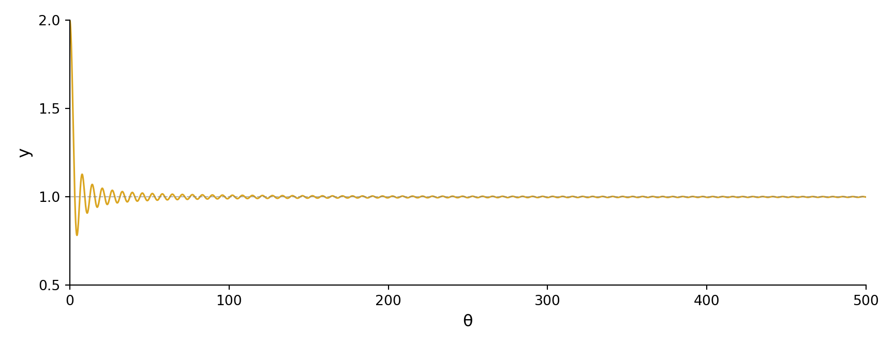
Teorema de Rolle
En esta presentación, aprenderás
● Intuición geométrica del teorema de Rolle.
● La definición formal del teorema.
● Las condiciones para que el teorema de Rolle sea válido.
Intuición del teorema de Rolle
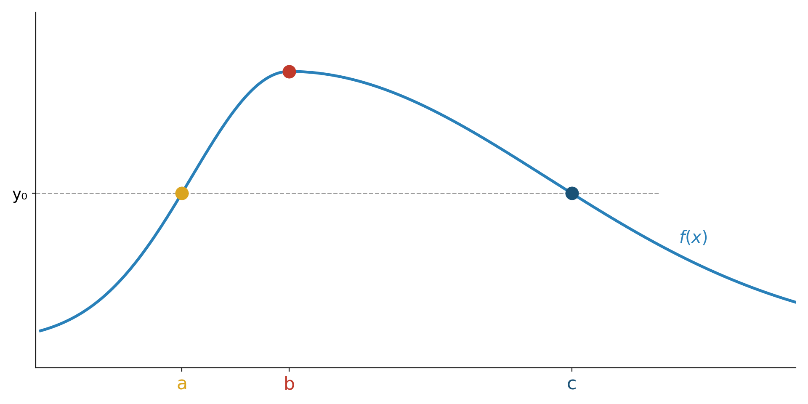
Definición del teorema de Rolle
\[\text{if} \quad f({\color{goldenrod}a}) = f({\color{navy}c})\]
\[\text{then} \quad \exists \; {\color{goldenrod}a} < {\color{#c0392b}b} < {\color{navy}c} \quad \text{s.t.} \quad f'({\color{#c0392b}b}) = 0\]
Intuición del teorema de Rolle
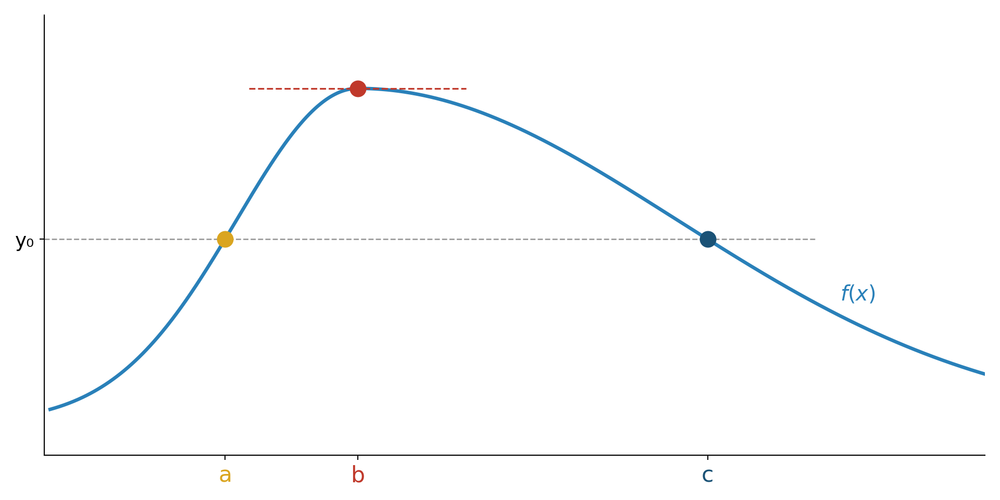
Definición del teorema de Rolle
\[\text{if} \quad f({\color{goldenrod}a}) = f({\color{navy}c})\]
\[\text{then} \quad \exists \; {\color{goldenrod}a} < {\color{#c0392b}b} < {\color{navy}c} \quad \text{s.t.} \quad f'({\color{#c0392b}b}) = 0\]
Ejemplo 1:
- Inspect the plot
- Confirm \(f(a)=f(c)\)
- Compute \(f'\)
- Set \(f'=0\) to find \(b\)
- Confirm in plot
- Inspect the plot
- Confirm \(f(a)=f(c)\)
- Compute \(f'\)
- Set \(f'=0\) to find \(b\)
- Confirm in plot
\[f(x) = -\frac{x^2}{3} + 2x - 3, \quad x \in [3\pm\sqrt{3}]\]
- Inspect the plot
- Confirm \(f(a)=f(c)\)
- Compute \(f'\)
- Set \(f'=0\) to find \(b\)
- Confirm in plot
\[f(x) = -\frac{x^2}{3} + 2x - 3, \quad x \in [3\pm\sqrt{3}]\]

- Inspect the plot
- Confirm \(f(a)=f(c)\)
- Compute \(f'\)
- Set \(f'=0\) to find \(b\)
- Confirm in plot
\[f(x) = -\frac{x^2}{3} + 2x - 3, \quad x \in [3\pm\sqrt{3}]\]
\[\begin{align*} f({\color{goldenrod}a}) &= \end{align*}\]
- Inspect the plot
- Confirm \(f(a)=f(c)\)
- Compute \(f'\)
- Set \(f'=0\) to find \(b\)
- Confirm in plot
\[f(x) = -\frac{x^2}{3} + 2x - 3, \quad x \in [3\pm\sqrt{3}]\]
\[\begin{align*} f({\color{goldenrod}a}) &= -\frac{(3-\sqrt{3})^2}{3} + 2(3-\sqrt{3}) - 3 \end{align*}\]
- Inspect the plot
- Confirm \(f(a)=f(c)\)
- Compute \(f'\)
- Set \(f'=0\) to find \(b\)
- Confirm in plot
\[f(x) = -\frac{x^2}{3} + 2x - 3, \quad x \in [3\pm\sqrt{3}]\]
\[\begin{align*} f({\color{goldenrod}a}) &= -\frac{(3-\sqrt{3})^2}{3} + 2(3-\sqrt{3}) - 3 \\ &= -\frac{9+3-6\sqrt{3}}{3} + 6 - 2\sqrt{3} - 3 \end{align*}\]
- Inspect the plot
- Confirm \(f(a)=f(c)\)
- Compute \(f'\)
- Set \(f'=0\) to find \(b\)
- Confirm in plot
\[f(x) = -\frac{x^2}{3} + 2x - 3, \quad x \in [3\pm\sqrt{3}]\]
\[\begin{align*} f({\color{goldenrod}a}) &= -\frac{(3-\sqrt{3})^2}{3} + 2(3-\sqrt{3}) - 3 \\ &= -\frac{9+3-6\sqrt{3}}{3} + 6 - 2\sqrt{3} - 3 \\ &= -3-1+2\sqrt{3}+6-2\sqrt{3}-3 \\ &= {\color{#c0392b}-1} \end{align*}\]
- Inspect the plot
- Confirm \(f(a)=f(c)\)
- Compute \(f'\)
- Set \(f'=0\) to find \(b\)
- Confirm in plot
\[f(x) = -\frac{x^2}{3} + 2x - 3, \quad x \in [3\pm\sqrt{3}]\]
\[\begin{align*} f({\color{goldenrod}a}) &= {\color{#c0392b}-1} \end{align*}\]
\[f'(x) =\]
- Inspect the plot
- Confirm \(f(a)=f(c)\)
- Compute \(f'\)
- Set \(f'=0\) to find \(b\)
- Confirm in plot
\[f(x) = -\frac{x^2}{3} + 2x - 3, \quad x \in [3\pm\sqrt{3}]\]
\[\begin{align*} f({\color{goldenrod}a}) &= {\color{#c0392b}-1} \end{align*}\]
\[\begin{align*} f'(x) &= -\frac{2}{3}x + 2 \end{align*}\]
- Inspect the plot
- Confirm \(f(a)=f(c)\)
- Compute \(f'\)
- Set \(f'=0\) to find \(b\)
- Confirm in plot
\[f(x) = -\frac{x^2}{3} + 2x - 3, \quad x \in [3\pm\sqrt{3}]\]
\[\begin{align*} f({\color{goldenrod}a}) &= {\color{#c0392b}-1} \end{align*}\]
\[\begin{align*} f'(x) &= -\frac{2}{3}x + 2 \end{align*}\]
\[\begin{align*} 0 &= -\frac{2}{3}x + 2 \implies {\color{#c0392b}b} = 3 \end{align*}\]
- Inspect the plot
- Confirm \(f(a)=f(c)\)
- Compute \(f'\)
- Set \(f'=0\) to find \(b\)
- Confirm in plot
\[\begin{align*} f({\color{goldenrod}a}) = {\color{#c0392b}-1}, \quad f'(x) = -\frac{2}{3}x+2, \quad {\color{#c0392b}b}=3 \end{align*}\]

Ejemplo 2:
\(f({\color{teal}x}) = |\sin({\color{teal}x})|, \quad {\color{teal}x} \in [{\color{goldenrod}\pi/2},\, {\color{navy}3\pi/2}]\)
Inspect the plot
Confirm \(f({\color{goldenrod}a})=f({\color{navy}c})\)
Compute \(f'\)
Set \(f'=0\) to find \({\color{navy}b}\)
Confirm in plot
Inspect the plot
Confirm \(f({\color{goldenrod}a})=f({\color{navy}c})\)
Compute \(f'\)
Set \(f'=0\) to find \(b\)
Confirm in plot
Inspect the plot
Confirm \(f({\color{goldenrod}a})=f({\color{navy}c})\)
Compute \(f'\)
Set \(f'=0\) to find \(b\)
Confirm in plot
\(f({\color{goldenrod}a}) = |\sin(\pi/2)| = 1\)
\(f({\color{navy}c}) = |\sin(3\pi/2)| = 1\)
Inspect the plot
Confirm \(f(a)=f(c)\)
Compute \(f'\)
Set \(f'=0\) to find \(b\)
Confirm in plot
\(f'({\color{teal}x}) =\)
Inspect the plot
Confirm \(f(a)=f(c)\)
Compute \(f'\)
Set \(f'=0\) to find \(b\)
Confirm in plot
\(f'({\color{teal}x}) = \operatorname{sgn}(\sin({\color{teal}x}))\cos({\color{teal}x})\)
Inspect the plot
Confirm \(f(a)=f(c)\)
Compute \(f'\)
Set \(f'=0\) to find \({\color{navy}b}\)
Confirm in plot
\(f'({\color{teal}x}) = \operatorname{sgn}(\sin({\color{teal}x}))\cos({\color{teal}x})\)
Inspect the plot
Confirm \(f(a)=f(c)\)
Compute \(f'\)
Set \(f'=0\) to find \({\color{navy}b}\)
Confirm in plot
\(f'({\color{teal}x}) = \operatorname{sgn}(\sin({\color{teal}x}))\cos({\color{teal}x})\)
\(0 = \operatorname{sgn}(\sin({\color{teal}x}))\cos({\color{teal}x})\)
Inspect the plot
Confirm \(f(a)=f(c)\)
Compute \(f'\)
Set \(f'=0\) to find \({\color{navy}b}\)
Confirm in plot
\(f'({\color{teal}x}) = \operatorname{sgn}(\sin({\color{teal}x}))\cos({\color{teal}x})\)
\(0 = \operatorname{sgn}(\sin({\color{teal}x}))\cos({\color{teal}x})\)
\({\color{teal}x} = 0,\ \pi/2,\ \pi,\ 3\pi/2,\ 2\pi,\ \ldots\)
Inspect the plot
Confirm \(f(a)=f(c)\)
Compute \(f'\)
Set \(f'=0\) to find \({\color{navy}b}\)
Confirm in plot
\(f'({\color{teal}x}) = \operatorname{sgn}(\sin({\color{teal}x}))\cos({\color{teal}x})\)
\(0 = \operatorname{sgn}(\sin({\color{teal}x}))\cos({\color{teal}x})\)
\({\color{teal}x} = 0{\color{red}{\times}},\ \pi/2{\color{red}{\times}},\ \pi,\ 3\pi/2{\color{red}{\times}},\ 2\pi{\color{red}{\times}},\ \ldots\)
Inspect the plot
Confirm \(f(a)=f(c)\)
Compute \(f'\)
Set \(f'=0\) to find \(b\)
Confirm in plot
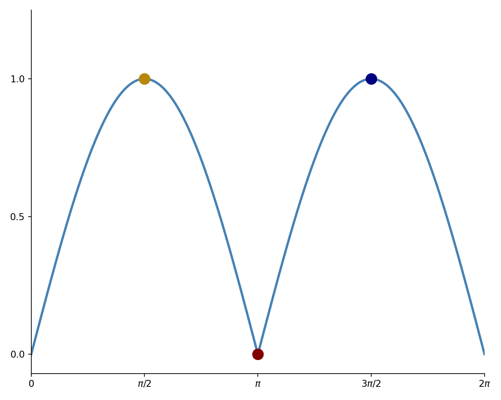
Inspect the plot
Confirm \(f(a)=f(c)\)
Compute \(f'\)
Set \(f'=0\) to find \(b\)
Confirm in plot
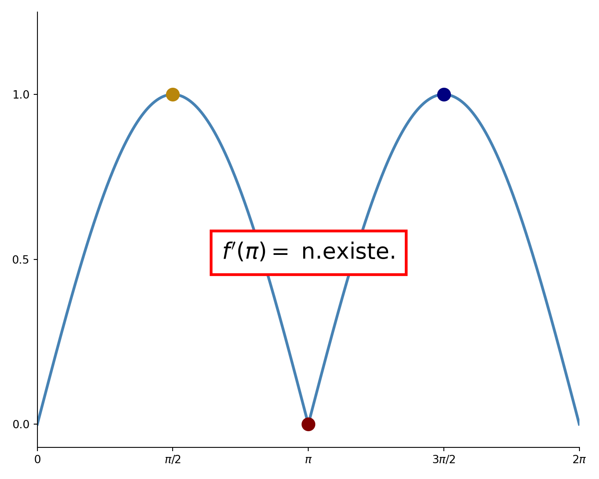
Condiciones para la validez del teorema de Rolle
\(f(x)\) debe ser continua en \([a,\, c]\)
\(f(x)\) debe ser diferenciable en \((a,\, c)\)
\(f(a) = f(c)\)
Teorema del valor medio
En este video, aprenderás
● Intuición geométrica del teorema del valor medio.
● La definición formal del teorema, y por qué su nombre es confuso.
● La relación entre el teorema del valor medio y el teorema de Rolle.
● Las condiciones de validez del teorema del valor medio.
Teorema del valor medio
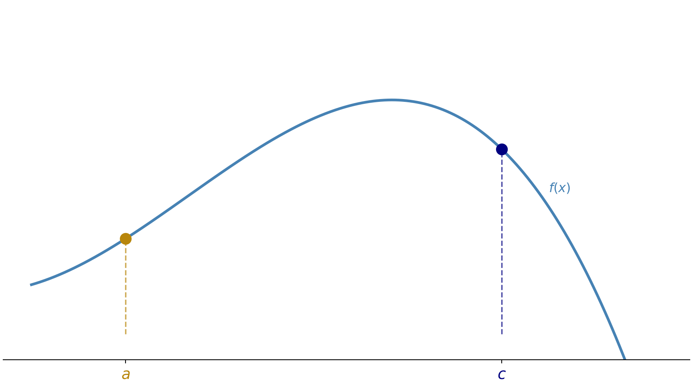
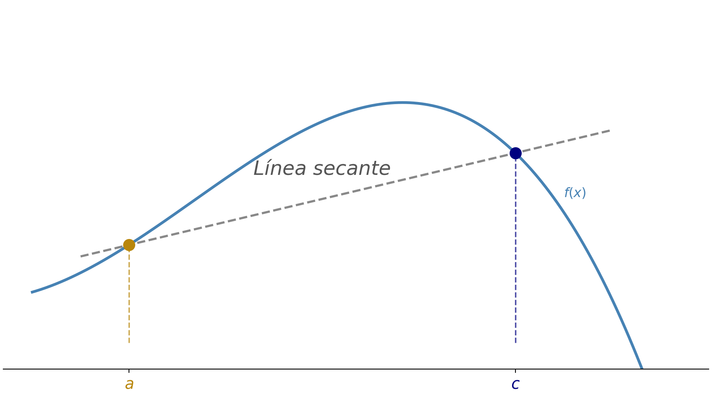

Definición del teorema del valor medio
\[f'({\color{navy} b}) = \frac{f({\color{maroon} c}) - f({\color{goldenrod} a})}{{\color{maroon} c} - {\color{goldenrod} a}}, \quad {\color{goldenrod} a} < {\color{navy} b} < {\color{maroon} c}\]
\[\phantom{f'(b)} = \frac{{y_{\color{maroon} c}} - {y_{\color{goldenrod}{a}}}}{{x_{\color{maroon} c}} - { x_{\color{goldenrod}{a}}}}\]
Ejemplo 1:
Inspeccionar la gráfica
Calcular la derivada
Sustituir \(a\) y \(c\) en la definición
Resolver para \(b\)
Confirmar en la gráfica
Inspeccionar la gráfica
Calcular la derivada
Sustituir \(a\) y \(c\) en la definición
Resolver para \(b\)
Confirmar en la gráfica
\(f({\color{teal}x}) = 2{\color{teal}x}^2 - 3{\color{teal}x} + 1, \quad {\color{teal}x} \in [{\color{goldenrod}{-1}},\, {\color{navy}2}]\)
Inspeccionar la gráfica
Calcular la derivada
Sustituir \(a\) y \(c\) en la definición
Resolver para \(b\)
Confirmar en la gráfica
\(f({\color{teal}x}) = 2{\color{teal}x}^2 - 3{\color{teal}x} + 1, \quad {\color{teal}x} \in [{\color{goldenrod}{-1}},\, {\color{navy}2}]\)
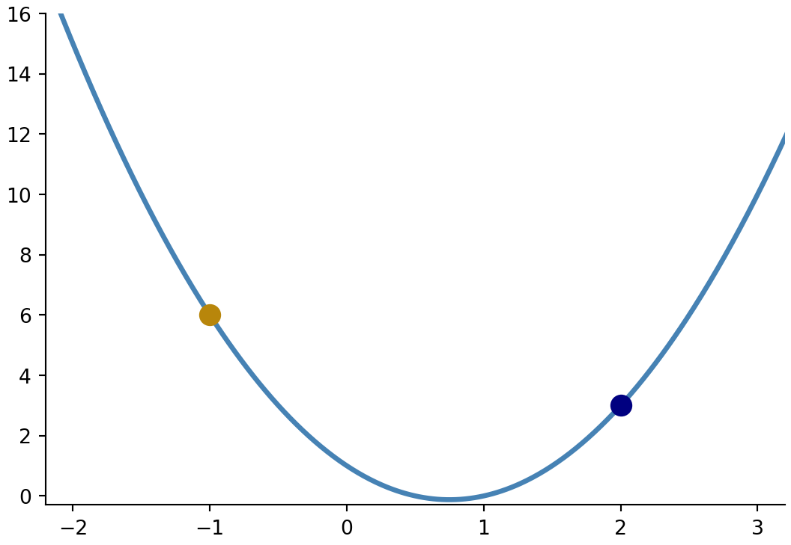
Inspeccionar la gráfica
Calcular la derivada
Sustituir \(a\) y \(c\) en la definición
Resolver para \(b\)
Confirmar en la gráfica
\(f({\color{teal}x}) = 2{\color{teal}x}^2 - 3{\color{teal}x} + 1, \quad {\color{teal}x} \in [{\color{goldenrod}{-1}},\, {\color{navy}2}]\)
Inspeccionar la gráfica
Calcular la derivada
Sustituir \(a\) y \(c\) en la definición
Resolver para \(b\)
Confirmar en la gráfica
\(f({\color{teal}x}) = 2{\color{teal}x}^2 - 3{\color{teal}x} + 1, \quad {\color{teal}x} \in [{\color{goldenrod}{-1}},\, {\color{navy}2}]\)
\(f'({\color{teal}x}) = 4{\color{teal}x} - 3\)
Inspeccionar la gráfica
Calcular la derivada
Sustituir \(a\) y \(c\) en la definición
Resolver para \(b\)
Confirmar en la gráfica
\(f({\color{teal}x}) = 2{\color{teal}x}^2 - 3{\color{teal}x} + 1, \quad {\color{teal}x} \in [{\color{goldenrod}{-1}},\, {\color{navy}2}]\)
\(f'({\color{teal}x}) = 4{\color{teal}x} - 3\)
Inspeccionar la gráfica
Calcular la derivada
Sustituir \(a\) y \(c\) en la definición
Resolver para \(b\)
Confirmar en la gráfica
\(f({\color{teal}x}) = 2{\color{teal}x}^2 - 3{\color{teal}x} + 1, \quad {\color{teal}x} \in [{\color{goldenrod}{-1}},\, {\color{navy}2}]\)
\(f'({\color{teal}x}) = 4{\color{teal}x} - 3\)
\(f'({\color{navy}b}) = \dfrac{f({\color{navy}2}) - f({\color{goldenrod}{-1}})}{{\color{navy}2} - {\color{goldenrod}{-1}}}\)
\(4{\color{navy}b} - 3 = \dfrac{(2({\color{navy}2})^2 - 3({\color{navy}2}) + 1) - (2({\color{goldenrod}{-1}})^2 - 3({\color{goldenrod}{-1}}) + 1)}{3}\)
Inspeccionar la gráfica
Calcular la derivada
Sustituir \(a\) y \(c\) en la definición
Resolver para \(b\)
Confirmar en la gráfica
\(f({\color{teal}x}) = 2{\color{teal}x}^2 - 3{\color{teal}x} + 1, \quad {\color{teal}x} \in [{\color{goldenrod}{-1}},\, {\color{navy}2}]\)
\(f'({\color{teal}x}) = 4{\color{teal}x} - 3\)
\(f'({\color{navy}b}) = \dfrac{f({\color{navy}2}) - f({\color{goldenrod}{-1}})}{{\color{navy}2} - {\color{goldenrod}{-1}}}\)
\(4{\color{navy}b} - 3 = \dfrac{(2({\color{navy}2})^2 - 3({\color{navy}2}) + 1) - (2({\color{goldenrod}{-1}})^2 - 3({\color{goldenrod}{-1}}) + 1)}{3}\)
Inspeccionar la gráfica
Calcular la derivada
Sustituir \(a\) y \(c\) en la definición
Resolver para \(b\)
Confirmar en la gráfica
\(f({\color{teal}x}) = 2{\color{teal}x}^2 - 3{\color{teal}x} + 1, \quad {\color{teal}x} \in [{\color{goldenrod}{-1}},\, {\color{navy}2}]\)
\(f'({\color{teal}x}) = 4{\color{teal}x} - 3\)
\(f'({\color{navy}b}) = \dfrac{f({\color{navy}2}) - f({\color{goldenrod}{-1}})}{{\color{navy}2} - {\color{goldenrod}{-1}}}\)
\(4{\color{navy}b} - 3 = \dfrac{(2({\color{navy}2})^2 - 3({\color{navy}2}) + 1) - (2({\color{goldenrod}{-1}})^2 - 3({\color{goldenrod}{-1}}) + 1)}{3}\)
\(4{\color{navy}b} - 3 = \dfrac{(8 - 6 + 1) - (2 + 3 + 1)}{3}\)
\(4{\color{navy}b} - 3 = -1\)
\(4{\color{navy}b} = 2\)
Inspeccionar la gráfica
Calcular la derivada
Sustituir \(a\) y \(c\) en la definición
Resolver para \(b\)
Confirmar en la gráfica
\(f({\color{teal}x}) = 2{\color{teal}x}^2 - 3{\color{teal}x} + 1, \quad {\color{teal}x} \in [{\color{goldenrod}{-1}},\, {\color{navy}2}]\)
\(f'({\color{teal}x}) = 4{\color{teal}x} - 3\)
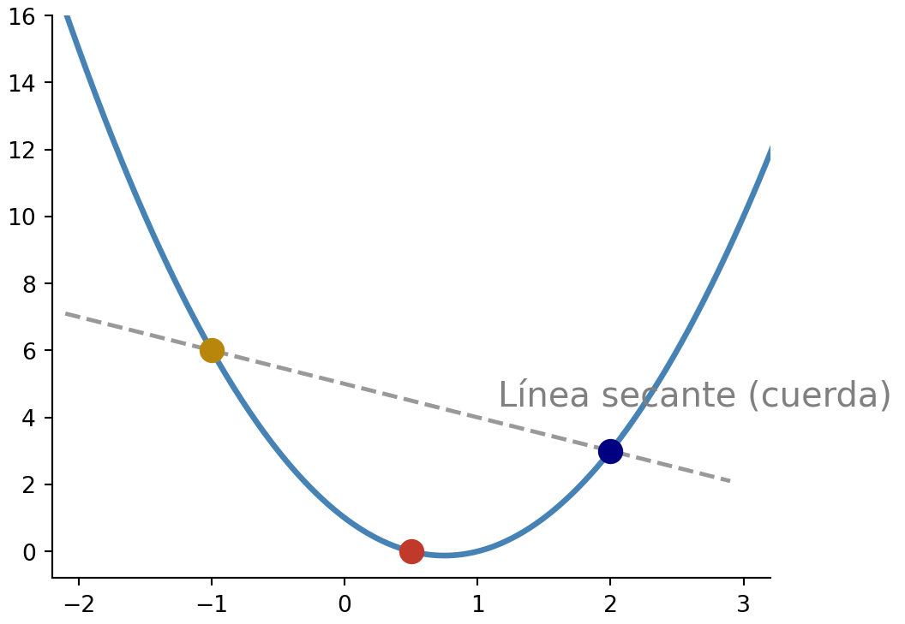
Inspeccionar la gráfica
Calcular la derivada
Sustituir \(a\) y \(c\) en la definición
Resolver para \(b\)
Confirmar en la gráfica
\(f({\color{teal}x}) = 2{\color{teal}x}^2 - 3{\color{teal}x} + 1, \quad {\color{teal}x} \in [{\color{goldenrod}{-1}},\, {\color{navy}2}]\)
\(f'({\color{teal}x}) = 4{\color{teal}x} - 3\)
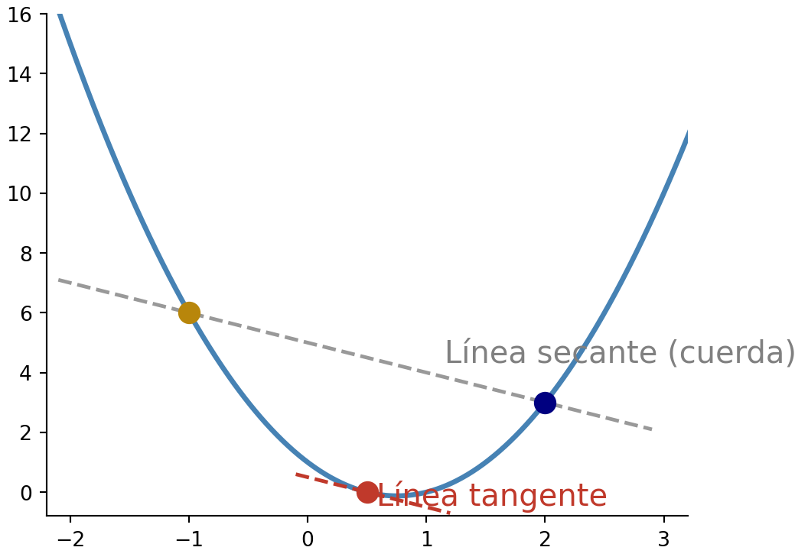
Condiciones para la validez del teorema del valor medio
● \(f(x)\) debe ser continua en \([a,\, c]\)
● \(f(x)\) debe ser diferenciable en \((a,\, c)\)
● \(f(a) = f(c)\)
¿Qué hay en un nombre?
Del TVM (Teorema del Valor Medio):
● La pendiente sobre un intervalo es igual al promedio de las pendientes instantáneas sobre ese intervalo.
● La pendiente global es igual al promedio de las pendientes locales.
● La pendiente de una línea secante es el promedio de las pendientes de todas las líneas tangentes.
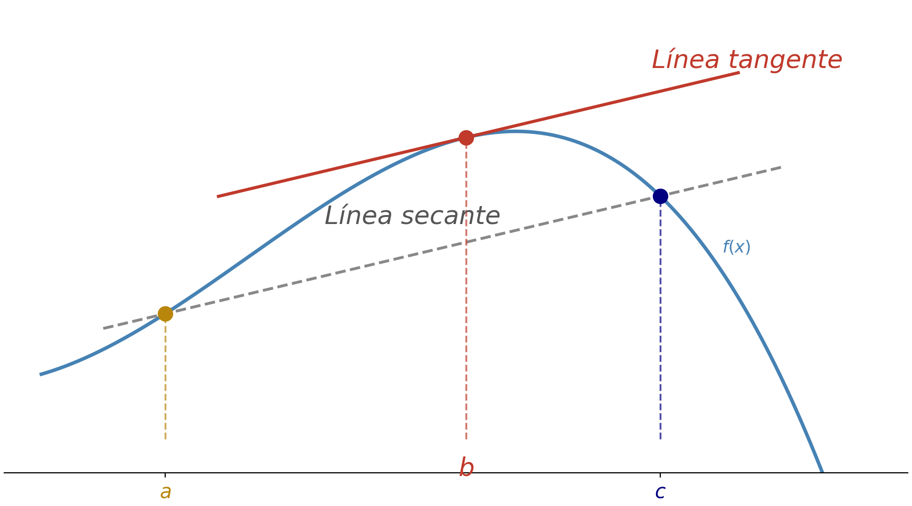

© 2025 Elvis Sánchez – Universidad Técnica de Machala